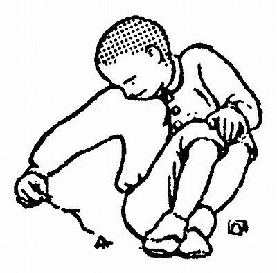
［＃改ページ］
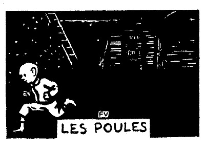
ルピック夫人はいう――
「ははあ……オノリイヌは、きっとまた
そのとおりだ。窓から見ればちゃんとわかるのである。向こうの、広い中庭のずっと奥のほうに、鶏小舎の小さな屋根が、暗闇の中に、戸の
「フェリックスや、お前ちょっと行って、閉めて来るかい」
と、ルピック夫人は、三人の子供のうち、一番上の男の子にいう。
「僕あ、鶏の世話をしにここにいるんじゃないよ」
「じゃ、お前は、エルネスチイヌ？」
「あら、
兄貴のフェリックスも、姉のエルネスチイヌも、ろくろく顔さえ上げないで返事をする。二人ともテーブルに
「そうそう、なんてあたしゃ馬鹿なんだろう」と、ルピック夫人はいう――「すっかり忘れていた。にんじん、お前いって鶏小舎を閉めておいで」
彼女は、こういう愛称で末っ子を呼んでいた。というのは、髪の毛が赤く、顔じゅうに
「だって、母さん、僕だってこわいよ」
「なに？」と、ルピック夫人は答える――「大きななりをして……。嘘だろう。さ、早く行くんですよ」
「わかってるわ。そりゃ、強いったらないのよ。まるで
姉のエルネスチイヌがいう。
「こわいものなしさ、こいつは……。こわい人だってないんだ」
と、これは兄貴のフェリックスである。
おだてられて、にんじんは
「そんなら、
ルピック夫人は、知らないよという
「ここで待っててあげるわ」
が、彼女は、
「やかましいな。おれだよ」
戸を閉めて走り出す――手にも、足にも、羽根が
ところが、兄貴のフェリックスも、姉のエルネスチイヌも、平気で本を読みつづけている。ルピック夫人は落ちつきはらった声で、彼にいう――
「にんじん、これから、毎晩、お前が閉めに行きなさい」
［＃改ページ］
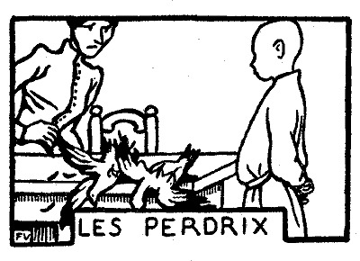
いつものように、ルピック氏は、テーブルの上で、
二羽の鷓鴣は、じたばたする。首を振る。
ルピック夫人――どうして、さっさと殺さないんだい。
にんじん――母 さん、僕、石板に書くほうがいいなあ。
ルピック夫人――石板は、お前には、丈 がとどかないよ。
にんじん――そいじゃ、羽根をむしるほうがいいや。
ルピック夫人――そんなことは、男のすることじゃない。
にんじんは、二羽の鷓鴣をとりあげる。そばから、親切にやり方を教えるものがある。
「ぎゅっと
両手に、一羽ずつ、それをうしろへかくして、彼はやり出す。
ルピック氏――二羽一度にか。無茶しよる。
にんじん――早くやっちゃいたいからさ。
ルピック夫人――神経家ぶるのはよしとくれ。心ん中じゃ、うれしくってたまらないくせに……。
鷓鴣は
鷓鴣は、頑強だ。
どうしてもだめなので、
「やあ、冷血！ 冷血！」
兄貴のフェリックスと、姉のエルネスチイヌが叫んだ。
「なに、あれで、うまくやったつもりなのさ」と、ルピック夫人はいう――「
ルピック氏は、年功を
「これでいいだろう」
にんじんは、死んだ鷓鴣をテーブルの上に投げ出す。
ルピック夫人は、それを、こっちへ引っくり返し、あっちへ引っくり返しして見る。小さな
「あんとき、取り上げちまえばよかったのさ。これじゃ、目もあてられやしない……」
ルピック夫人はいう。
すると、兄貴のフェリックスが――
「たしかに、いつもよりゃ、まずいや」
［＃改ページ］
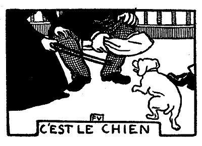
ルピック氏と姉のエルネスチイヌは、ランプの下で、
だしぬけに、
「しいっ！」と、ルピック氏がいった。
ピラムは、一段と声を張り上げる。
「馬鹿」と、ルピック夫人はいう。
が、ピラムは、それこそ、みんなが飛びあがるほど猛烈な声で
「黙らないかい、しょうがない犬だね。お黙りったら、畜生！」
ピラムはますます調子を上げる。ルピック夫人は手の
ルピック一家はかんかんに怒る。みんな総立ちになり、いっぽう腹ばいになったまま、頑としていうことをきかない犬に
窓ガラスが
にんじんは、いいつけられもしないのに、外の様子を見に行った。たぶん
にんじんは、暗い、長い廊下を、両手を戸のほうにつき出して、歩いて行く。
昔なら、危険を
近頃は、要領がいい。
両親は、彼が勇敢に
いつかは思い知ることがあるだろう。しかし、もうよほど前から彼の計略が
心配なのは、
さて、戻ってもいい時間だ。お芝居に暇をかけ過ぎてはよくない。怪しいと思われたらそれまでだ。
再び、か
ところで、やっとこさ、ピラムは、彼の留守の間に黙ってしまったので、安心したルピック一家は、また、めいめい、きまりの場所に着いていた。で、誰も
「犬が寝とぼけたんだよ」
［＃改ページ］
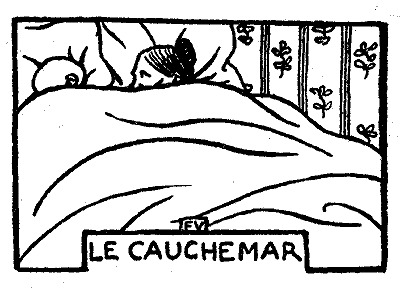
にんじんは泊り客が
八月でさえ
眠る前に、彼は
それにもかかわらず、彼は、眠ったかと思うと、もう鼾をかいている。こればかりはどうしても
すると、ルピック夫人は、彼の
にんじんの悲鳴で、ルピック氏はにわかに眼を
「
「夢でうなされているんですよ」
と、ルピック夫人は答える。
それから、彼女は、
にんじんは壁に額と
［＃改ページ］
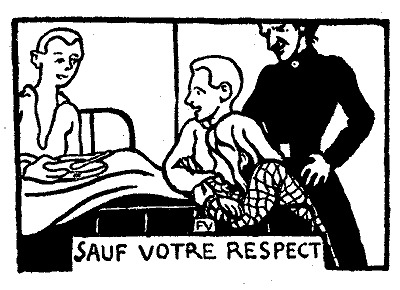
こんな話をしてもいいだろうか。しなければならないだろうか。ほかの者が、心もからだも真白になって、洗礼を受けようという年に、にんじんはまだ
からだをだんだん大きく
ちっとずうずうしい量見だ！
また、ある晩は、ちゃんと、適当の
自分のそばには、あるはずの塀がないので驚いた。
ルピック夫人は、怒るところを怒らない。
さよう、寝床へスープを持って来てくれるのである。それは、なかなか手のかかったスープで、ルピック夫人が、木の
枕もとには、兄貴のフェリックスと姉のエルネスチイヌが、陰険な顔つきをしてにんじんを見張っている。今にも、合図さえあれば、大きな声を立てて笑う用意をしているのである。ルピック夫人は、
「さ、いいかい！ 用意はできたね！」
「ああ、いいよ！」
今からもう、二人は、そら、
「さ、いいね！」
ゆっくり、ゆっくり、最後のひと
「ああ、
「そうだろうと思った」
こう、なんでもなく、にんじんは答える。みんなが当てにしていたような顔つきはしない。
彼は、そういうことに
［＃改ページ］
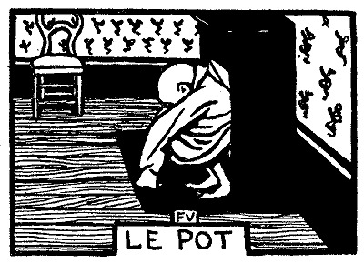
もう何度も、
冬は、この散歩が、なかなか苦になる。日が暮れて、
で、その晩も、毎晩のように、自分で自分に
「したいか、したくないか？」
ところが、その晩は、雨が窓ガラスを
「こういうこともあるんだ」――落ち着いて思案をしたあげく、にんじんは結論を与える――「したくない！」
彼はみんなに「お休みなさい」といい、
と、眼をつぶるかつぶらないうちに、彼はまた例の張りつめて来るような気持を感じ出す。
――やっぱり仕方がない。
心の中で、にんじんは
だれでも、普通なら起きるところだ。しかし、にんじんは、寝台の下に、小便壺が置いてないことを知っている。ルピック夫人が、どんなに、そんなはずはないと
で、にんじんは、起きるかわりに、
――
にんじんは、ほっとする。ゆうゆうと眼を
にわかに、彼は眼を
――やあ、こいつあ、
さっきは、
彼は寝床の上に坐り、思案してみる。戸には鍵がかかっている。窓には
それでも、彼は起き上がって、戸と、窓の鉄格子にさわってみる。それから床の上に
彼は寝床にはいる。そして、また起きる。眠るよりも、からだをゆすぶるか、歩き廻るか、
「母さん！ 母さん！」
聞こえては困ると思うので、力の抜けたような声を出す。なぜなら、もし、ルピック夫人がここへ姿を現わそうものなら、にんじんは、けろりとなおってしまい、まるで彼女を馬鹿にしてるとしか思えないからである。明日になって、呼んだということが
それに、声を立てるといっても、声の立てようがないではないか。全身の力は、ことごとく、
やがて、極度の苦痛が襲ってきて、にんじんは、踊りはじめる。壁にぶつかって行く。それから、
部屋の暗さが度を増してくる。
にんじんは、やっと朝がた、眠りに
「なんて変な臭いだい」
「母さん、おはよう」
と、にんじんはいう。
ルピック夫人は、敷布を引きずり出す。部屋の
「僕、病気だったの。それに壺がないんだもの」
にんじんは、
「嘘つき！ 嘘つき！」
ルピック夫人はこういいながらどこかへ出て行く。やがて壺を
「こんな子供をもつなんて、いったい、何の
それから、今度は、
「息がつまる、息がつまる」
というのである。
それから、また、にんじんの鼻先で、
「
にんじんは、シャツ一枚で、素足のまま、壺を見つめている。夜中には、この壺はなかった。それに、今になって、そこの、寝台の
「嘘だったら首をやる」――こう、壺の上に眼を
「僕あ、もう知らないよ。勝手にしろい」
［＃改ページ］
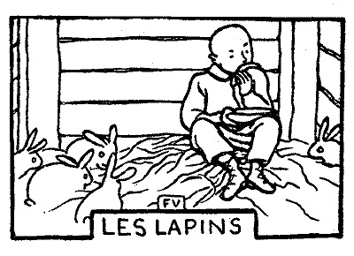
「メロンはもうないよ、お前の分は……」と、ルピック夫人はいう――「それに、お前はあたしとおんなじで、メロンは
「そうだったかも知れない」
と、にんじんは考えるのである。
好き嫌いは、こうやって、人が勝手に決めてくれる。大体において、母親が好きなものだけを好きとしておかなければならない。チーズが来る。
「こりゃ、にんじんは食べないにきまってる」
と、こうルピック夫人がいうので、にんじんは――
「
第一、うっかり食べると、あとが恐ろしいことを知っている。
それに、もうじき、誰も知らない場所で、この上もなく奇妙な欲望を満たす暇があるではないか。デザートになると、ルピック夫人が彼にいうのである――
「このメロンの皮を兎に持ってっておやり」
にんじんは、皿をひっくり返さないように、できるだけ水平に持って、
「こら、待て、待て」と、にんじんはいう――「ちょっと待ってくれ、半分ずつにしよう」
そこでまず、
そこで今度は、みんなが残した甘味のある黄色いところ、口へ入れて
小舎の戸は
午睡の時間を照らす太陽が、屋根の
［＃改ページ］
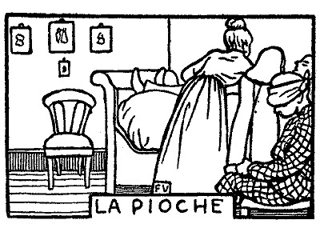
兄貴のフェリックスとにんじんとが、一緒に並んで働いている。めいめい
すると間もなく、兄貴のフェリックスを寝台の上に運んで行き、そっと寝させなければならない。弟の血を見て、ふらふらっとなったからである。
――塩はどこにある？
――冷たい水を少し……頭を冷やすんだから……。
にんじんは、椅子の上にあがっている。みんなの頭の間から、肩越しにのぞくためである。額は
ルピック氏はにんじんにいった――
「ひどい目に
それから、姉のエルネスチイヌは、傷口に
「バタの中へ
彼は声を立てなかった。なぜなら、それは、何の役にも立たないということを、あらかじめ警告されていたから。
ところが、そのうちに、兄貴のフェリックスが、片方の眼を開ける。それからもう一方の眼を開ける。
「いつでもこの通りだ」とルピック夫人はにんじんに向かっていう――「お前、気をつけることはできなかったのかい。しょうがないぽんつくだね」
［＃改ページ］
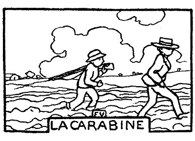
ルピック氏は、
「鉄砲は、二人で一
「ああ、それでいいよ」と兄貴のフェリックスは答える――「二人で代りばんこに持つから……。なあに、時々にんじんが貸してくれりゃ、僕、それでいいんだよ」
にんじんは、いいとも、わるいともいわない。どうせ
ルピック氏は、緑色の袋から鉄砲を出して、
「初めにどっちが持つんだ？ そりゃ、
兄貴のフェリックス――その光栄はにんじんに譲るよ。先へ持て。
ルピック氏――フェリックス、今日 はなかなか感心だ。そうならそうで、父 さんにも考えがあるぞ。
ルピック氏は、鉄砲をにんじんの肩にのっけてやる。
ルピック氏――さ、行って遊んでこい。喧嘩 をするんじゃないぞ。
にんじん――犬は連れてくの？
ルピック氏――連れて行かんでええ。お前たち、代りばんこに犬になれ。それに第一、お前たちほどの猟師が、獲物 に傷だけ負わせるなんていうことはない。一発で仕留めるんだ。
にんじんと兄貴のフェリックスは出かけて行く。服装は簡単だ。不断のままである。長靴がないことは少し残念だが、ルピック氏は
「手ぶらで帰るようなことはないよ、お前は……」
と、兄貴のフェリックスがいう。
「そりゃ、大丈夫だよ」
と、にんじんもいう。
肩が
「そらね、いくらだって持たしてやるから、
兄貴のフェリックスがいう。
「やっぱり、兄さんだよ」
と、にんじんはいう。
一群の雀が飛び立つと、彼は、兄貴のフェリックスに動くなという合図をする。雀の
もしも
ところが、今度こそは、雀のほうで、彼を待っているらしい。
兄貴のフェリックス――まだ撃 つなよ。遠すぎるぞ。
にんじん――そうかなあ……。
兄貴のフェリックス――当りキよ。からだを低くすると勝手が違ってくるんだぜ。すぐそばだと思っても、実際はかなり遠いんだ。
そこで、兄貴のフェリックスは、自分のいったとおりだということを示すために、いきなり顔を出す。雀は、驚いて飛んで行ってしまう。
が、そのうち、一羽だけ、しなった枝の先に止まったまま、その枝に揺られている。尾をぴんと上げ、頭を左右にかしげ、腹をむき出している。
にんじん――しめたぞ、こいつなら撃 てら、大丈夫……。
兄貴のフェリックス――どら、どいてみろ。うん、なるほど、素敵 なやつだ。さ、早く、鉄砲を貸せ。
すると、もう、にんじんは、鉄砲を取り上げられ、両手を
それは、まるで手品のようだ。にんじんは、さっきまで、この鉄砲を、それこそ、胸に
「ぐずぐずしちゃだめだよ。もっと急がなくっちゃ……」
にんじん――ゆっくり急ぐよ。
兄貴のフェリックス――ようし、膨 れっ面 をするんだね。
にんじん――だって……。じゃ、歌を唱 えばいいのかい。
兄貴のフェリックス――雀がとれたんだから、なんにもいうことはないじゃないか。もしか、中 らなかったらどうする！
にんじん――ううん、僕あ、そんな……。
兄貴のフェリックス――お前だって、兄さんだって、おんなじことさ。今日は兄さんがとった、明日はお前がとる、それでいいだろう。
にんじん――明日ったって……。
兄貴のフェリックス――きっとだよ。
にんじん――わかるもんか。きっとなんて、明日になりゃ……。
兄貴のフェリックス――もし嘘 だったら、なんでもやらあ。それでいいだろう。
にんじん――まあいいや……。それより、もっと獲 ろうよ。僕が撃ってみら……。
兄貴のフェリックス――だめだよ、もう遅いから。さ、帰って、こいつを母 さんに焼いてもらおう。そら、そっちへやるよ。カクシへ入れとけ。なんだい、馬鹿だなあ、おい、嘴 を出しとけよ。
二人の猟師は
「
にんじんは、いい気持になり、さっきからのことを忘れてしまう。彼らは、仲よく、
「おや、にんじん、まだ鉄砲をもっているな。ずっとお前がもち通しか？」
「うん、たいてい……」
と、にんじんは答える。
［＃改ページ］
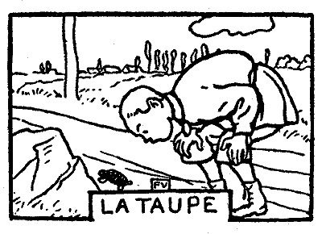
にんじんは道ばたで、
初めは、なかなか工合よく、すらすら行く。
土竜はもう
すると、驚いた。にんじんは、土竜がどうしても死なないということに気がつく。
「こね
なるほど、血まみれになった石の上で、土竜はぴくぴく動く。
「こね野郎！」と、にんじんは
彼はまたそれを拾い上げる。
顔を
それでも、例の
こうして、にんじんが、死にもの狂いになって、叩きつければ叩きつけるほど、土竜は、よけい死なないように見えてくる。
［＃改ページ］
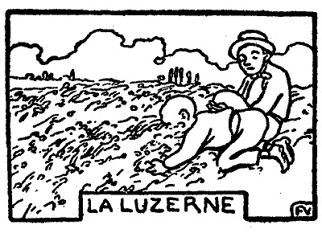
にんじんと兄貴のフェリックスは、夕方のお
兄貴のフェリックスは、バタやジャムをつけたパンを
時として、なんにもつけないパンは固い。すると、にんじんは、敵に向かうようにそれにぶつかって行くのである。ぎゅっと
要するに、彼はちっとも食べ物の
彼は戸の

「
と、彼がいう。
兄貴のフェリックスは、「こん畜生」といいながら、
にんじん――たしかに、いないよ。
兄貴のフェリックス――どこへ行ったんだろう。
にんじん――そこまではわからん。坐ろう。
階段の
兄貴のフェリックス――帰るまで待っていると思ったら間違いだぞ。
にんじん――そいじゃ、ほかにうまい工夫があるかい。
兄貴のフェリックス――待ってなんかいるもんか。飢 え死 をしたかないからなあ、おれは……。今すぐ食いたいんだ。なんでもいい、草でもいい。
にんじん――草……！ そいつあ面白 い。父さんや母さんも、それを聞いたらぎゃふんだ。
兄貴のフェリックス――だって、サラダを食べるじゃないか。ここだけの話だけど、苜蓿 なんか、サラダとおんなじに軟 かいよ。つまり、油と酢 をつけないサラダさ。
にんじん――かきまわすこともいらないし……。
兄貴のフェリックス――賭 けをしよう。僕も、苜蓿 なら食べるよ。お前は食べられないぜ、きっと。
にんじん――どうして、兄 さんに食べられて、僕に食べられないんだい？
兄貴のフェリックス――さ、いいから賭けをしよう。いやか？
にんじん――うん、だけど、その前に、お隣りへ行って、パンを一片 ずつと、それへヨーグルトを少し貰ってきたら？
兄貴のフェリックス――僕あ苜蓿 のほうがいい。
にんじん――行こう。
やがて
――なんだろう、どんな獣だろう、ここを通ったのは……？
いつまでも、人は心配をして、こういうに違いない。
ぼつぼつ疲れかげんになってきた
彼らは畑の
「いい気持だね」と、兄貴のフェリックスがいう。
顔がくすぐったい。それで二人は、むかし同じ寝床の中で寝た時のようにふざけるのである。あの頃、すると、ルピック氏が、隣りの部屋から
「もう
彼らは
「僕、
と、兄貴のフェリックスがいえば、
「こら、こんなに進むぜ」
と、にんじんがいう。
ひと息ついて、もっと静かに、自分たちの幸福を味わうべきである。
そこで、
「することはこれっきりじゃないぜ。おい、食べよう。はじめるよ。僕の領分にさわっちゃいけないよ」
兄貴のフェリックスはこういう。そして、片腕を半径に、彼は
「僕あ、残ってるだけでたくさんだ」
と、にんじんがいう。
二つの頭がかくれる。もうどこにいるかわからない。
風が静かな
兄貴のフェリックスは、しこたま草を引き抜いて、そいつを頭の上に
鼻の先でそいつを
どうして急ぐ必要がある？
テーブルを時間で借りたわけでもなく、橋の上に
歯を
［＃改ページ］
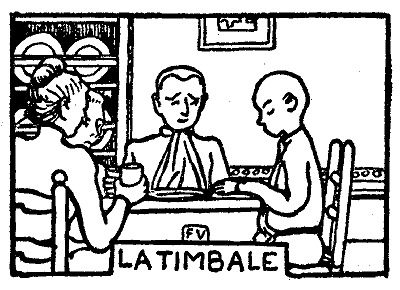
にんじんは、これからもう、食事の時に、
ある日の朝、母親のルピック夫人が、いつものように、彼の
「僕いらないよ。
夕飯の時、彼はまたいった――
「僕いらないよ。喉渇いてないから」
「なかなか経済だね、この子は」――ルピック夫人はいう――「みんな大助かりだ」
そういうふうで、彼は、はじめの一日、朝から晩まで、葡萄酒を飲まずにいた。陽気が穏かで、それに、ただ、なんということなしに、喉が渇かなかったからである。
翌日、ルピック夫人は、食器を並べながら、彼に
「今日は、葡萄酒を飲むかい、にんじん？」
「そうだなあ」と彼はいった――「まあ、どうだかわからない」
「じゃ、好きなようにおし」と、ルピック夫人はいった――「湯呑みが
彼は、出しに行かない。
みんなが、そろそろ意外な顔をし出す。
「えらくなったもんさ」と、ルピック夫人がいう――「お前には、そんな芸当もできるんだね」
「
兄貴のフェリックスと姉のエルネスチイヌは、断乎としていい放った。
姉のエルネスチイヌ――「きっと一週間ぐらい飲まないでいられてよ」
兄貴のフェリックス――「なあに、この日曜まで、三日もてば、大したもんだ」
「だって」と、にんじんは、薄笑いを浮かべながらいう――「だって、喉が渇かなかったら、僕、いつまでだって飲みやしないよ。兎や
「天竺鼠とお前とは別だよ」
兄貴のフェリックスがいう。
にんじんは、
「病気でなけりゃ、気が狂ったんだ」
あるものは、こういった。また、あるものは、こうもいった――
「
だが、何事も、珍しいうちが花だ。舌がちっとも渇いてないという証拠をみせるために、にんじんが、舌を出して見せる回数は、だんだんに
両親も、近所の人たちも、根気負けがしてきた。ただ、なんでもない人が、どうかしてその話を聞くと、また両腕を高く
「
医者に相談すると、そういう例はどうも奇妙には奇妙だが、しかし、要するにあり得ないということは、なに一つないわけだと宣言した。
ところで、にんじんは、自分ながら
彼は、もう、自分の湯呑みのことさえとっくに忘れている。湯呑みは、長い間使わずに
［＃改ページ］
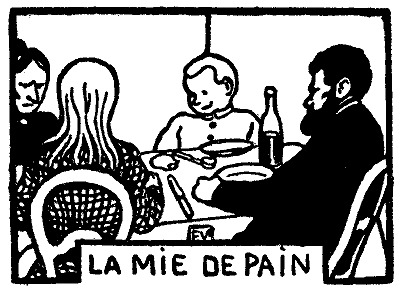
ルピック氏は、それでも、
いつものとおり、大急ぎで、口もきかずに飯を食う。もし、これが料理屋なら、そろそろ、テーブルを次のお客に明け渡しても差支えないのだが、その時分になってルピック夫人は――
「パンのかけらを一つ、こっちへちょうだい、砂糖煮を食べちまうんだから……」
誰にそういったのか？
たいがいの場合、ルピック夫人は、自分の食べるものは自分で取るのである。そして話をするといえば犬相手である。彼女は、犬に野菜の値段をいって聞かせる。そして、
「馬鹿おいい」と、彼女は、お愛想に
ところが、今日という今日、ルピック夫人は、大変なことをしでかした。慣例を破って、彼女は、じかにルピック氏に言葉をかけたのだ。相手もあろうに、彼女が砂糖煮を食べてしまうためにパンのかけらを請求したのは、
姉のエルネスチイヌは、母親のために侮辱を感じ、なんとなく
「おやじは、あれで、今日は気分がいいんだ」
兄貴のフェリックスは、椅子の脚を
にんじんはどうかというと、ぴりっとも身動きをせず、
［＃改ページ］
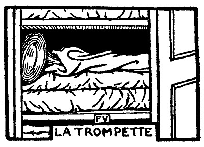
ルピック氏は、今朝、パリから帰って来たところである。
事実、にんじんは、それほど向こう見ずではないのである。むしろ、用心深いほうである。そこで、彼は、どっちかというとラッパのほうがいい。手に持っていて飛び出す心配がない。しかし、ふだん聞くところによると、自分くらいの男の子は、飛び道具か剣か、戦争で使う道具でなければ、遊んだって本気になれないらしい。年からいっても、火薬の臭いを
「僕あ、ピストルのほうがいいや」
と、彼は、大胆にいった。てっきり
それだけならいいが、彼は少し調子に乗り過ぎた。そして、こう附け加えた――
「
「へえ、そうか」と、ルピック氏は、当惑していった――「お前はピストルのほうがいいのか。じゃ、また変わったんだね」
にんじんは、たちどころに、
「ううん、そうじゃないよ、ふざけていってみたんだよ。心配しないだっていいよ。僕あ、大嫌いだ、ピストルなんか。さ、早く、ラッパをおくれよ。吹いてみせるからさ。僕、ラッパを吹くの大好きさ」
ルピック夫人――「そんなら、どうして嘘 を吐 くんだい。お父さんを困らせようと思ってだろう。ラッパが好きなら、ピストルが好きだなんていうもんじゃない。おまけに、なんにも見えないくせに、ピストルが見えているなんていうもんじゃない。だから、その罰に、ピストルもラッパも、お前にはあげないよ。よくこれを見とくといい。赤い総 と、金の縁飾 のある旗がついてる。よく見たね。じゃ、もういいから台所へ行って、もう一人母 さんがいるかどうか見といで。さっさと走って！ 指で口笛を吹いてるがいい」
戸棚のてっぺんの、白い下着類を重ねた上で、三つの赤い総と、金の縁飾のある旗にくるまって、にんじんのラッパは、手も届かず、見えもせず、音も立てず、最後の審判のそれのように、誰かに吹かれるのを待っている。
［＃改ページ］
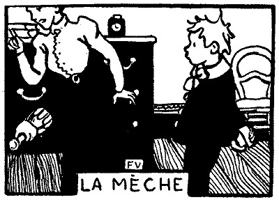
日曜日には、子供たちがミサに行かないと、ルピック夫人は承知しなかった。そこで、子供たちを小ざっぱりとさせるのだが、姉のエルネスチイヌが、みんなのおめかしを監督することになっており、そのために、自分のが遅れてしまうのである。彼女はそれぞれネクタイを選んでやり、爪を磨いてやり、祈祷書を持たせる。一番大きなのをにんじんに渡すのである。だが、なんといっても、仕事は、兄弟たちの頭へポマードを塗ることだ。
これをやらないと、どうにも気がすまぬらしい。
にんじんは、それでも、おとなしくされるままになっている。しかし、兄貴のフェリックスは、あらかじめ姉に向かって、しまいに怒るぞと念を押すのである。が、姉は姉で、こういってごまかすのである。
「ああ、また今日も忘れちゃった。わざとやったんじゃないわよ。この次の日曜から、きっとつけない」
で、相変わらず、彼女は、その時になると、指の先でひと
「覚えてろ」
と、兄貴はいう。
今朝も、タオルにくるまり、頭を下へ向けているところを、姉のエルネスチイヌは、またこっそりやったのだが、彼は、気がつかぬらしい。
「さ、いうことを聞いたげてよ。だから、ぶつぶついいっこなしよ。あのとおり、
「ありがとう」
と、兄貴のフェリックスはいった。
彼は、別に疑う
姉のエルネスチイヌは、彼に服を着せてしまう。飾るところは飾った。それから白い絹の手袋をはめさせる。
「もういいんだね」
と、兄貴のフェリックスはいう。
「
だが、兄貴のフェリックスは、間違えている。彼は、開き箪笥の前を通り過ぎてしまう。急いで食器戸棚のほうへ行く。戸を開ける。水のいっぱいはいった水差しを取り上げる。そして、これを、平然と、頭へぶっかけたのである。
「ちゃんとそういっといたろう、エルネスチイヌ」と、彼はいう――「僕あ、人から馬鹿にされるのは嫌いなんだ。そんな
髪の毛はぺしゃんこになり、日曜の
「ひでえ
しかし、にんじんが、いつもの調子であきらめていても、髪の毛は、いつの間にか、彼の
ポマードで無理に寝かせつけられて、
すると、間もなく、髪の毛の最初のひと
［＃改ページ］
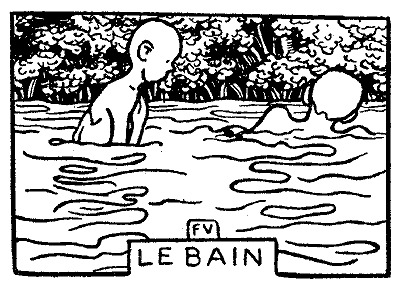
やがて時計が四時を打とうとしているので、にんじんは、矢も
「出かけるんだろう」と、彼はいう。
兄貴のフェリックス――行こう。猿股 を持っといで。
ルピック氏――まだ暑いぞ、きっと。
兄貴のフェリックス――僕あ、日が照ってる時のほうがいいや。
にんじん――それに、父 さんだって、ここより水っ縁 のほうがいいよ。草の上へ寝転 んどいでよ。
ルピック氏――さ、先へ歩け。ゆっくりだぞ。死んじまっちゃなんにもならん。
だが、にんじんは、早くなる足並みを、やっとのことで
「ねえ、
「
と、兄貴のフェリックスは、馬鹿にしきった返事をする。
なるほど、にんじんは、ぴたりと
彼は、今、乾ききった低い石垣を、まっさきに、ひらりと飛び越えた。すると、たちまち、眼の前を小川が流れているのである。はしゃいでいる暇もなかった。
歯を
この中へはいるわけである。ルピック氏が、時計を眺めて、
にんじんは、一人離れて、着物を
彼は、一枚二枚脱いでいって、そいつを
猿股を
そうこうするうちに、兄貴のフェリックスは、もう川を占領し、わがもの顔に荒しまわっている。腕で
「お前はもう、やめか」
ルピック氏はにんじんにいった。
「からだを乾かしてたんだよ」
やっと、彼は決心する。地べたに坐る。そして、
木の根で、
「
と、ルピック氏はいう。
にんじんは、すると、
「ああ、だけど、僕あ、きらいさ。耳ん中へ水が
彼は、そこで、泳ぎの練習ができる場所、つまり、膝で砂の上を歩きながら、両腕を前のほうへ動かせるところを
「あんまり急にやるからいけないんだ。手を握ったまま動かしちゃだめだよ。髪の毛を

こうルピック氏がいうと、
「足を使わないで泳ぐほうがむずかしいんだよ」
と、にんじんはいう。
が、一所懸命にやってみようとすると、兄貴のフェリックスがそれをさせない。しょっちゅう
「こっちへおいでよ、にんじん。もっと深いところがあるぜ。こら、足がつかないや。沈むぜ。ごらんよ、ほら、僕が見えるだろう。そらこのとおり……見えなくなるよ。そいじゃ、こんだ、あの柳の木のほうへ行ってろよ。動いちゃいけないよ。そこまで十ぺんで行くからね」
「数えてるよ」
と、にんじんは、がたがた顫えながら、肩を水から出し、まるで捧杭のように動かずにいるのである。
さらに、彼は、泳ごうとしてからだを
「こんだ、お前の番さ、ね、僕の背中へおあがりよ」
「僕あ、自分で練習してるんだから、ほっといておくれよ」
にんじんは、こういうのである。
「もう、よし。みんな出ろ。ラムをひと口ずつ飲みにこい」
と、ルピック氏は呼ぶ。
「もう出るの？」
と、にんじんがいう。
今になると、彼はまだ出るのが
「早くしろよ」と、ルピック氏は叫ぶ――「さもないと、兄さんがラムをみんな飲んじまうぞ」
ラムなら、あんまり好きじゃないのだが、にんじんは、いう――
「僕の分は、誰にもやらないよ」
そうして、彼は、それを
ルピック氏――よく洗わなかったな。くるっぷしに、まだ垢 がついてる。
にんじん――泥だよ、こりゃ。
ルピック氏――いいや、垢だ。
にんじん――もう一度水へはいってこようか。
ルピック氏――明日除 ればいい。また来よう。
にんじん――うまい具合に天気ならね。
彼は、指の先へ、タオルの乾いたところを、つまり兄貴が
［＃改ページ］
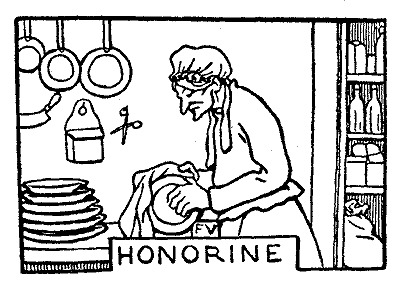
ルピック夫人――お前さんは、もう幾歳 だっけ、オノリイヌ？
オノリイヌ――この万聖節 で、ちょうど六十七になりました、奥さん。
ルピック夫人――そいじゃ、もう、いい年だね。
オノリイヌ――だからって、別にどうもありませんよ、まだ働けるだもの。病気なんぞしたことなしね。巌丈 なことときちゃ馬にだって負けやしませんからね。
ルピック夫人――そんなこというなら、あたしが考えてることをいってあげようか。お前さんは、ぽくりと死ぬよ。どうかした日の晩方 、川から帰りがけに、背負 ってる籠 がいつもの晩より重く、押してる車が思うように動かないのさ。お前さんは、車の梶棒 の間へ膝 をついて倒れる。濡 れた洗濯物の上へ顔を押しつけてね。それっきりさ。誰か行って起こしてみると、もうお前さんは死んでるんだよ。
オノリイヌ――笑わしちゃ困るよ、奥さん。心配しないでおくんなさい。脚 だって、まだぴんぴんしてるんだもの。
ルピック夫人――そういや、少しばかり前こごみになってきたね。だけど背中が丸くなると、洗濯をする時に、腰が疲れなくっていい。ただどうにも困ることは、お前さんの眼が、そろそろ弱ってきたことだよ。そうじゃないとはいわせないよ。この頃、それがちゃんと、あたしにはわかるんだ。
オノリイヌ――そんなことはないね。嫁に行った頃とおんなじに、眼ははっきり見えるがね。
ルピック夫人――よし。それじゃ、袋戸棚 を開 けて、お皿を一枚持って来てごらん、どれでもいい。もしお前さんが、ちゃんと皿拭布 をかけたというなら、この曇りかたはどうしたんだろう。
オノリイヌ――戸棚の中に、湿 りっ気 があるだね。
ルピック夫人――そんなら、戸棚の中に、指が幾本もあるのかねえ。そうして、お皿の上をあっちこっちうろつき廻 っているのかねえ。この跡はなにさ。
オノリイヌ――あれま、どこにね、奥さん。なんにも見えませんよ。
ルピック夫人――そうだろう？ そいつを、あたしが咎 めてるんだよ。いいかい、婆 や、あたしは、なにも、お前さんが骨惜しみをしてるっていいやしないよ。そんなことでもいったら、そりゃ、あたしが間違いだ。この土地で、お前さんぐらい精 を出して働く女は一人だっていやしない。ただ、お前さんは、年を取ってきた。もっとも、あたしだって年は取る。誰だってみんな年を取るのさ。こうもしよう、ああもしようと思ったって、それだけじゃどうすることもできないようになる。だからさ、お前さんだって、時おりは、眼の中が、布を張ったように霞 むこともあるだろうっていうのさ。いくらこすっても、なんにもならない。そうなってしまったんだから……。
オノリイヌ――それにしたって、わしゃ、ちゃんと眼は開けてるだよ。水桶の中へ顔をつっこんだ時みたいに、皆目 方角もわからないなんてこたあないんだけどね。
ルピック夫人――いや、いや、あたしのいうことは間違いなし。昨日 だってそうだよ、旦那 さんに、よごれたコップを差し上げたろう。あたしはなんにもいやしなかった。なんだかんだっていうことになって、お前さんがまた気に病 むといけないと思ってさ。旦那さんも、そうだ。なんにもおっしゃらなかった。これはまた、ふだんから、なんにもおっしゃらない方 だからね。だけど、なに一つ見逃 しはなさらない。世間では、無頓着 な人だと思ってるけど、こりゃ間違いだ。そりゃ、気がつくんだからね。なんでも額 の奥へ刻 み込んどく。だから、そのコップだって、指で押しやって、ただそれだけさ。お昼には、辛抱 して、とうとうなんにもお飲みにならなかった。あたしゃ、お前さんと、旦那さんと、二人分、辛い思いをしたよ。
オノリイヌ――そんな馬鹿な話ってあるもんじゃない。旦那さんが女中に気兼 ねするなんて……。そういいなさればいいのに……。コップを代えるぐらいなんでもありゃしない。
ルピック夫人――それもそうだろう。だが、お前さんよりもっと抜け目のない女たちが、どうしたってあの人に口をきかせることはできないんだよ。旦那さんは、物を言うまいって決心してらっしゃるんだからね。あたしは、もう諦 めてる、自分じゃ。ところで、今話してるのは、そんなことじゃない。ひと口にいってみれば、お前さんの眼は日一日に弱ってくる。これが、洗濯だとか、なんとか、そういう大きな仕事は、まあ、半分の粗相 ですむにしたところで、細かな仕事になると、こりゃもう、お前さんの手にゃおえない。入費 は殖 えるけれど、しかたがない。あたしゃ、誰か、お前さんの手助けになる人をみつけようと思うんだよ……。
オノリイヌ――わしゃ、ほかの女に尻イくっついていられちゃ、一緒にやって行けませんや、奥さん。
ルピック夫人――それを、こっちでいおうと思ってるとこさ。だとすると、どうしよう。正直なところ、あたしゃどうすればいいかねえ。
オノリイヌ――わしが死ぬまで、こういうふうにして、結構やって行けますよ。
ルピック夫人――お前さんが死ぬって……？ ほんとにそんなことを考えてるのかい。あたしたちをあいにくみんなお墓へ送りかねないお前さんじゃないか。そのお前さんが死ぬなんてことを、人が当てにしてるとでも思っているのかい。
オノリイヌ――奥さんは、だけど、布 きんのあてようがちょっくら間違ってたぐらいで、わしに暇をくれようっていうつもりは多分おあんなさるまい。だいいち、わしゃ、奥さんが出て行けっていいなさらにゃ、この家 から離れませんよ。いったん外へ出りゃ、けっく、野たれ死をするだけのこった。
ルピック夫人――誰が暇を出すなんていったい、オノリイヌ。なにさ、そんな真赤 な顔をして……。あたしたちは、今、お互いに、心置きなく話をしてるんだ。すると、お前さんは腹を立てる。お寺の本堂よりとてつもない無茶をいい出す。
オノリイヌ――わしにそんなこといったって、しょうがないだよ。
ルピック夫人――じゃ、あたしはどうなのさ。お前さんの眼が見えなくなったのはお前さんの罪でもなく、あたしの罪でもない。お医者に治 してもらうさ。治ることだってあるんだから。それはそうと、あたしと、お前さんと、一体、どっちが余計難儀をしてるだろう。お前さんは、自分で眼を患 ってることもしらずにいる。家中 のものが、そのために不自由をする。あたしゃ、お前さんが気の毒だから、万一の粗相 がないように、そういってあげたまでだ。それに、言葉優しく何をこうしろっていう権利は、こりゃ、あたしにあると思うからさ。
オノリイヌ――いくらでもいっとくんなさい。どうにでも好きなようになさるがいいさ。わしゃ、さっき、ちっとの間、町の真中 へおっぽり出されたような気がしただけれど、奥さんがそういいなさるなら安心しましたよ。わしのほうでも、これから皿のこたあ気をつけます。うけ合いました。
ルピック夫人――そうしてもらえりゃ、なんにもいうことはないさ。あたしゃ、これで、評判よりゃましな人間だからね。どうしてもいうことをきかない時は、こりゃ仕方がないが、さもなけりゃ、お前さんを手放すなんてことはしないよ。
オノリイヌ――そんなら、奥さん、もうなんにもいいなさるな。今という今、わしゃ、自分がまだ役にたつって気がしてきましたよ。もしも奥さんが出て行けっていいなすったら、わしゃ、そんな法はないって怒鳴 るから……。だけども、そのうちに、自分で厄介者 だっていうことがわかったら、そうして、水を容 れた鍋 を火へかけて沸 かすこともできんようになったら、そん時ゃ、さっさと、ひとりで、追い出される前に出て行きますよ。
ルピック夫人――いつなんどきでも、この家へ来りゃ、スープの残りがとってあるってことを忘れずにね、オノリイヌ。
オノリイヌ――いいや、奥さん、スープはいらん、いらん。パンだけで結構 。マイット婆さんは、パンだけしか食わんようになってから、てんで死にそうもないからね。
ルピック夫人――それがさ、あの婆さんは、もう百を越してるんだからね。ところで、お前さんは、まだこういうことを知ってるかい？ 乞食 っていうものは、あたしたちより仕合 せなんだよ。あたしがそういうんだから、オノリイヌ。
オノリイヌ――奥さんがそういいなさるなら、わしもそういっとこう。
［＃改ページ］
家族のために何か役に立つという機会は、にんじんにとって、めったに来ないのである。どこかの
ところで彼は、ルピック夫人が、
決心がついた。
朝から晩まで、
夏は、食事の後で、皿を洗うためにその湯を使うだけである。ほかの時は
どうかすると、オノリイヌは、その口笛が聞こえなくなるのである。彼女は、こごんで耳を押しつける。
「みんな
彼女は、鍋の中へ、
仮に誰かが彼女にこういったとする――
「オノリイヌ、もう使いもしない湯を、どうして沸かすんだい。鍋をおろしておしまい。火をお消し。お前さんは、ただみたいに薪を燃すんだね。寒くなると、がたがた
彼女は、返事に困って、頭をゆすぶるだろう。
自在鉤の先に、鍋が一つ懸かっているのを、彼女は年が年じゅう見て来たのだ。
彼女は、年が年じゅう、湯が
で、今ではもう、鍋に手を触れることはもちろん、それを眼で見る必要もない。彼女は、
それが、今日はじめて、彼女は見当を外したのである。
水がことごとく火の上に落ち、灰の雲が、うるさいものに腹を立てた獣のように、オノリイヌ目がけて飛びかかり、からだを包み、呼吸をつまらせ、皮膚を
彼女は、後すざりをしながら、叫び声を立てた。
「地べたから鬼が飛び出したかと思った」
眼がくっつき、それがちくちくと痛む。だが彼女は、
「ああ、わかった」と、彼女は、びっくりしていう――「鍋がなくなってる」
「いや、そんなはずはない。さっぱりわからん」と、またいう――「鍋は、さっきまでちゃんとあったんだ。たしかにあった。
してみると、オノリイヌが、野菜の切り
だが、それは、一体、誰だ？
ルピック夫人は、
「なにを大騒ぎしてるんだい、オノリイヌ」
「騒ぎも騒ぎも、大変なことが起こったから、騒いでるんですよ」と、彼女は叫ぶ――「もうちっとで、わしゃ
ルピック夫人――その水溜 りはなにさ。竈 がびしょびしょじゃないか。これで、綺麗 になるこったろう。
オノリイヌ――わしの鍋を、どうして黙って持ってくだね。どうせ、あんたがはずしたに違いない。
ルピック夫人――鍋は、この家 じゅうみんなのものなんだからね。それとも、あたしにしろ、旦那 さまにしろ、また子供たちにしろ、その鍋を使うのに、いちいちお前さんの許しを受けなきゃならないのかい？
オノリイヌ――わしゃ、無茶をいうかも知れませんよ。腹が立ってしょうがないんだから。
ルピック夫人――あたしたちにかい、それともお前さん自身にかい？ そうさ、どっちにだい？ あたしゃ物好きじゃないが、それが知りたいもんだね。まったく呆 れた女だよ、お前さんは、鍋がそこにないからって、火の中へ柄杓にいっぱい水をぶっかけるとは、ずいぶん思いきったことをするじゃないか。おまけに意地を張ってさ、自分の粗相 は棚に上げて、他人に、あたしに、罪をなすくろうとする。こうなったら、あたしゃどこまでもお前さんをとっちめるよ。
オノリイヌ――にんじん坊 ちゃん、わしの鍋は、どこへ行ったか知りなさらんか？
ルピック夫人――なにを知ってるもんか、あの子が。第一、子供には責任はない。お前さんの鍋はどうでもいいから、それより、昨日 お前さんはなんといったか、それを思い出してごらん。――「そのうちに、自分で、湯ひとつ沸かすことができなくなったっていうことに気がついたら、追い出されなくっても、勝手にひとりで出て行く」――こういったろう。現に、あたしには、お前さんの眼のわるいことはわかってた。だが、それほどまでひどいとは思ってなかったよ。もう、これ以上なんにもいわない。あたしの身になって考えてごらん。お前さんも、あたし同様、さっきからの事情はわかってるんだからね。自分で始末をつけるがいい。ああ、ああ、遠慮はいらないから、いくらでも泣くさ。それだけのことはあるんだもの。
［＃改ページ］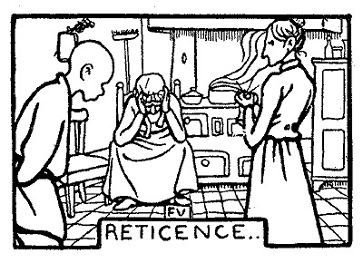
「
…………
にんじんは、また、なにをしようというのか？ 彼は、せっかくの話を台なしにしそうだ。幸い、ルピック夫人の冷やかな視線の下で、彼は、ぴたりと口を
オノリイヌに、こういう必要があるだろうか――
「僕がしたんだよ」
どんなにしても、この婆さんを助けることはできないのだ。彼女はもう眼が見えない。もう眼が見えないのだ。気の毒だが、しかたがない。早晩、彼女は、我を折らねばならぬだろう。ここで、彼が自白をしても、それは彼女をいっそう悲しませるだけの話だ。出て行くなら出て行くがいい。そして、それがにんじんの
それからまた、母親にこういうと、どういうことになるのだ――
「母さん、僕がしたんだよ」
自分の手柄を
で、いよいよ、三人が一緒になって鍋をさがしはじめると、彼は誰よりも熱心らしく見えるのである。
ルピック夫人は、うわの空で、真っ先に断念する。
オノリイヌも、
［＃改ページ］
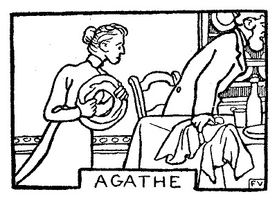
オノリイヌの代りには、その孫娘のアガアトが来ることになった。
「アガアトや」と、ルピック夫人はいう――「部屋へはいる前には、叩いて合図をするんだよ。だからって、なにも、馬みたいな力で戸を
「そろそろ始まった」と、にんじんは心の中でいった――「まあ、昼飯の時、どんなか見ててやろう」
食事は、広い台所でするのである。アガアトはナフキンを腕にかけ、
そして、ものを言うときは、あんまり早口だし、笑うときは声が大きすぎ、それになんでも、あんまり一所懸命になりすぎるのである。
ルピック氏が一番先へ席に着き、ナフキンをほどき、自分の皿を正面にある大皿のほうへ押しやり、肉をよそい、ソースをかけ、またその皿を引き寄せる。飲みものも自分で
皿を
ルピック夫人は、自分手ずから、子供たちの皿につけてやる。第一番に兄貴のフェリックス。これは、もう我慢ができないほど腹を
彼は固く禁じられてでもいるように、決してお代りをしない。一度よそった分だけで満足しているらしい。だが、もっとあげようといえば、それは
これに反して、誰に
ただ、誰もしゃべらない。
「この人たちは一体どうしたんだろう」
アガアトは、そう思っている。
彼らはどうもしないのである。そういうふうなのだ。ただそれだけである。
彼女は、誰の前でもかまわない、両腕を伸ばして
ルピック氏は、ガラスのかけらでも噛むように、ゆっくり食べている。
ルピック夫人は、これはまた、食事の時以外は
姉のエルネスチイヌは、眼を天井に向けている。
兄貴のフェリックスはパンの
だしぬけに、ルピック氏が、水差しに水を入れに行く。
「わたしが行きますのに……」
と、アガアトがいう。
あるいは、むしろ、そういったのではなく、ただそう考えただけである。彼女は、それだけでもう、世の中のあらゆる不幸に見舞われたように、舌が
ルピック氏のところには、もうほとんどパンがない。アガアトは、今度こそ、先手を打たれないようにしなければならぬ。彼女は、ほかの者のことを忘れるくらいにまで、彼のほうに気をつけている。
そこで、ルピック夫人は、つっけんどんに、
「アガアトや、お前、そうしてると、からだから枝が
やっと、
「はい、なんでございます」
と、答える。
それでも、彼女は、ルピック氏から眼を離さずに、心を四方に
時こそ来たれである。
ルピック氏がパンの最後のひと口を、今や口へ
ところが、ルピック氏は、ナフキンを結び、食卓を離れ、帽子をかぶり、裏庭へ
食事がすんでから、またはじめるなんていうことを、彼はしない。
釘づけみたいに、そこへ立ったまま、アガアトは、ぽかんとして、五斤かかる花輪形パンをお
［＃改ページ］

「拍子抜けがしたろう」と、にんじんは、台所で、アガアトと二人きりになってから言った――「がっかりしちゃだめだよ。こんなことはしょっちゅうあるんだから……。だけど、そんな
「穴倉へですよ、にんじん
にんじん――おっと待った。穴倉へは僕が行くんだ。梯子段 があぶなくって、女の人は滑 って首の骨をへし折っちまいそうなんだ。そいつを僕が平気で降 りられたもんで、それから、この僕でなけりゃならないってことになったんだ。赤い封蝋 と青い封蝋をちゃんと見分けられるしね。僕が空樽 を売ると、そいつは僕の収入 になるんだぜ。兎の皮だってそうだよ。お金 はお母 さんに預けとくんだ。
よく打合せをしとこう、いいかい、お互いに仕事の邪魔をしないようにね。
朝は、僕が犬の小屋を開 ける。それから、スープも僕がやることになってる。晩は、これも僕が、口笛で呼んで寝かせつける。町へ出てなかなか帰ってこないような時は、待ってるんだ。それから、母さんとの約束で、鶏小舎 は、僕がいつも閉 めに行くことになってる。僕はまた草むしりもする。どんな草でもいいってわけにいかないからね。くっついてる土は、足ではらって、あとの穴を埋 めとく。草は家畜にやるんだ。
運動のために、僕は、父 さんの手伝いをして薪 を切ることになっている。
父さんが生きたまま持って帰った猟の獲物 は、僕が首をひねる。君とエルネスチイヌ姉さんが羽根をむしるんだぜ。
魚の腹 は、僕が割 く。腸 も出す。それから、浮嚢 は踵 でぴちんと潰 す。
そういう時、鱗 を取るのは君だよ。それから、井戸から水を汲み上げるのもね。
糸巻の糸をほどく時は、僕が手伝うから。
コーヒーは、僕が挽 く。
旦那さんが泥だらけの靴を脱 いだら、僕がそいつを廊下へ持って出る。だが、エルネスチイヌ姉さんは、上履 を持ってくる権利をだれにも譲らないんだ。自分で刺繍 をしたからなんだ。
大事な使いは僕が引き受ける。遠道 をするときだとか、薬屋や医者へ行く時もそうだ。
君のほうは、小さな買物やなんか、村ん中 だけの走り使いをするわけだ。
しかし、君は、毎日二、三時間、それも年が年じゅう、川で洗濯をしなければならない。こいつが一等つらい仕事だろう。気の毒だがやってくれ。僕にゃ、それだけはどうすることもできないんだ。でも、時々は、暇があったら、僕も手をかしてあげるよ、洗濯物を生籬 の上へひろげる時なんかにね。
ああ、そうそう、注意しとくけどね、洗濯物は、決して果物の樹の上へひろげちゃいけないよ。旦那さんは君に小言 なんか言やしない。いきなりそいつを地べたの上へ弾 き飛ばしちまうから。すると奥さんは、ちょっと泥がついただけで、もう一度川へ行ってこいというよ。
靴の手入れは君に頼むよ。猟に行く靴へは、うんと油を塗ってくれたまえ。ゴム靴には、ぽっちり靴墨 をつけるんだ。でないと、あいつは、こちこちになるからね。
泥のついた半ズボンは、一所懸命に落とさなくったっていい。旦那さんは、泥がついてたほうがズボンの持ちがいいっていうんだ。なにしろ、掘り返した土ん中 を、裾 もまくらずに歩くんだからね。旦那さんは僕を連れてく時がある。獲物を僕が持つんだ。そういう時、僕は、ズボンの裾 をまくったほうがいい。すると、旦那さんは僕にこういうんだ――
「にんじん、お前はろくな猟師になれんぞ」
しかし、奥さんは、僕にこういうんだ――
「ズボンを汚 したら承知しないから……。耳がちぎれても知らないよ」
こいつは、趣味の問題だ。
要するに、君だってそんなに悲観することはないさ。僕の休暇中は、二人で用事を分担しよう。それから、姉さんと兄さんと僕が、また寄宿へ帰るようになったら、君の用事も少なくなる。つまり、おんなじわけだ。
それに、誰も君に対しちゃ、それほど辛 く当りゃしないよ。うちに来る人たちに訊 いてみたまえ、みんなそういうから。――姉さんのエルネスチイヌは優しきこと天使のごとしだし、兄貴のフェリックスは心ばえいとも気高 く、旦那さんは、資性廉直 、判断に狂いがない。奥さんは、こりゃ、まれに見る料理の名人だ。君の目からは、恐らく、家族じゅうで僕が一等むずかし屋に見えるだろう。なに、根を洗や、ほかのもんと違いはないのさ。ただ、扱い方を知ってりゃいいんだ。それに、僕のほうでも考えるし、悪いところは直しもする。謙遜 ぶらずにいえば、僕、だんだん人間がましにはなって来たんだ。もし君のほうで、少しでもその気になってくれりゃ、僕たちは、非常にうまく調子を合わして行けると思うんだ。
ああ、だめだぜ、僕のことをこれから「にんじん坊ちゃん」なんて呼んじゃ。「にんじん」って呼びたまえ、みんなとおんなじように。「若旦那さん」ていうよりゃ短くっていい。ただ君のお祖母 さんのオノリイヌみたいに、「こうだよ」とか、「こうしてやろう」なんていわないでくれたまえ。僕あ、それが嫌いさ。君のお祖母さんは、いつもそういうんだもの、僕あ癪 にさわってね。
［＃改ページ］朝は、僕が犬の小屋を
運動のために、僕は、
父さんが生きたまま持って帰った猟の
魚の
そういう時、
糸巻の糸をほどく時は、僕が手伝うから。
コーヒーは、僕が
旦那さんが泥だらけの靴を
大事な使いは僕が引き受ける。
君のほうは、小さな買物やなんか、村ん
しかし、君は、毎日二、三時間、それも年が年じゅう、川で洗濯をしなければならない。こいつが一等つらい仕事だろう。気の毒だがやってくれ。僕にゃ、それだけはどうすることもできないんだ。でも、時々は、暇があったら、僕も手をかしてあげるよ、洗濯物を
ああ、そうそう、注意しとくけどね、洗濯物は、決して果物の樹の上へひろげちゃいけないよ。旦那さんは君に
靴の手入れは君に頼むよ。猟に行く靴へは、うんと油を塗ってくれたまえ。ゴム靴には、ぽっちり
泥のついた半ズボンは、一所懸命に落とさなくったっていい。旦那さんは、泥がついてたほうがズボンの持ちがいいっていうんだ。なにしろ、掘り返した土ん
「にんじん、お前はろくな猟師になれんぞ」
しかし、奥さんは、僕にこういうんだ――
「ズボンを
こいつは、趣味の問題だ。
要するに、君だってそんなに悲観することはないさ。僕の休暇中は、二人で用事を分担しよう。それから、姉さんと兄さんと僕が、また寄宿へ帰るようになったら、君の用事も少なくなる。つまり、おんなじわけだ。
それに、誰も君に対しちゃ、それほど
ああ、だめだぜ、僕のことをこれから「にんじん坊ちゃん」なんて呼んじゃ。「にんじん」って呼びたまえ、みんなとおんなじように。「若旦那さん」ていうよりゃ短くっていい。ただ君のお
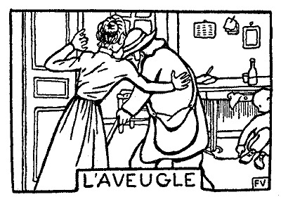
ルピック夫人――またやって来た。一体なんの用があるんだろう。
ルピック氏――それがわからんのか、お前は。いつもの十銭玉が欲 しいからさ。一日の食い分だ。戸を開 けてやれ。
ルピック夫人は、
「こんにちは、そこにいるみなさん」
と
彼は前に進む。短い杖が、鼠を
ルピック氏は、十銭の銀貨をつまんで、こういう――
「そら！」
彼は、それっきり相手にならない。新聞を読みつづける。
にんじんは、
ルピック夫人はそれに気がつく――
「その
彼女はそれを暖炉の下へ持って行く。もう遅い。あとには水溜りが残っている。
にんじんは、爪で地べたをこすり、汚れた水に、こっちへ流れてこいという合図をし、深い石の
「十銭もらったんだから、それでもういいじゃないか」
聞こえよがしに、ルピック夫人は、こういうのである。
が、
時として、ルピック氏は、新聞を裏返しながら――
「なるほど、そりゃそうだろう。だが、
「たしかなことかって……？」と、
「ちょっくら出て行きそうもない」
と、ルピック夫人はいう。
なるほど、
やがて、にんじんは、それで遊べるのである。
だが、そのうちに、ルピックス夫人は、巧妙な手段をめぐらし始める。彼女は、
そこで、
「そういうわけさ、ね、それでおしまいさ。眼玉もなくなるし、なにもかもなくなる。
彼の杖が手からすべり落ちる。ルピック夫人は、それを待っていたのだ。駈け寄って、杖を拾いあげる。そして、そいつを
彼女は、うまくだまして、また相手を引き寄せる。そして、
それから、彼女は、ちょっと
で、戸を閉める前に、ルピック夫人は、
「またおいで。今のお金をおっことさないようにね。今度の日曜だよ、お天気がよかったら。それから、お前さんがまだこの世にいたらね。まったく、お前さんのいうとおりさ。誰が死んで誰が生きてるかわかるもんじゃない。誰でも苦労っていうものはあるし、神さまはみんなのものだからね！」
［＃改ページ］
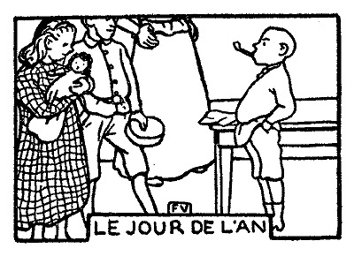
雪が降っている。元日がおめでたいためには、雪が降らなければならぬ。
ルピック夫人は、用心深く、中庭の開き戸を締めたままにしておくのである。すると、もう子供たちがやって来て、
にんじんは、寝台から飛びおり、裏庭の
儀式らしく、
姉のエルネスチイヌが、この二人に接吻をして、さていう――
「おはよう、
兄貴のフェリックスも、同じことを、きわめて早く、文句の終りへいちもくさんに駈け出して行く。そして、同様に接吻をする。
が、にんじんは、帽子の中から、一通の手紙を取り出す。封をした封筒の上に「我が親愛なる両親の君へ」とある。所番地は書いてない。種類
にんじんは、そいつをルピック夫人のほうに差し出す。彼女は封を切る。紙一面、満開の花に飾られ、その上、レースの
ルピック氏――わしには、なんにもないんだね。
にんじん――それ、二人にあげるんだよ、母さんがすんでから見るといいや。
ルピック氏――よし、お前は、わしより母さんのほうが好きなんだね。それならそれで、この新しい十銭玉が、お前のポケットの中へはいるかどうか見ているがいい。
にんじん――ちょっと待ってったら……母さんがもうすむから。
ルピック夫人――文章はしゃれてるけれど、字がへたで、あたしにゃ読めないよ。
「さ、今度は父さんの番だ」と、にんじんは
にんじんが、まっすぐに突っ立って、返事を待っている間、ルピック氏は、一度、それからもう一度、手紙を読む。じっと見ている。いつもの
目的が完全に達せられると、手紙は、もう何の役にも立たない。それこそ、みんなのものである。見ようと、触ろうと、めいめいの勝手だ。姉のエルネスチイヌと兄貴のフェリックスが、順番に取り上げて、
それを、こっちへひっくり返し、あっちへひっくり返しして見る。
「これで気に入らんというのかい？」
そう問い返しているように見える。
やっと、彼は、手紙を帽子の中へ押し込む。
お年玉の分配がはじまる。姉のエルネスチイヌは自分の
「お前には、取って置きのものがあるんだよ。なんだか当ててごらん」
ルピック夫人は、にんじんにこういう。
にんじん――ああ、そうか。
ルピック夫人――なにが「ああ、そうか」だい。もう知っているなら、見せる必要はないね。
にんじん――ううん、そうじゃないよ。もし知ってたら、僕、首だってあげらあ。
彼は、自らを信ずるもののごとく、おごそかに両手を上に差し上げる。ルピック夫人は食器棚を開ける。にんじんは
にんじんは、ためらわず、喜びに
それから、どえらい煙を天まで
「こいつは、具合がいい。よく通るぜ」
［＃改ページ］
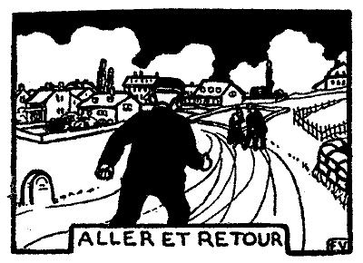
ルピックさんの
――この辺から走って行ってもいいだろうか？
彼は
――まだ早い。そんなことをすると息が切れちまう。それに、
そこで、もう少したってということにする。
――ここいらから走ってやろうかな……いや、あの辺からにしよう……。
彼は、自分自身に、いろんなことを問いかける。
――帽子は、いつ
ところが、兄貴のフェリックスと姉のエルネスチイヌとは、彼を置いてきぼりにする。そして、両親の
「なんだい、そりゃ」と、ルピック夫人はいう――「お前は、その年になって、まだ
そういっておいて、彼女は、たった一度、その
にんじんは、いよいよ休暇だと思うと、うれしくってたまらない。あんまりうれしくって、涙が出るのである。もっともこういうことは、しばしばあるので、彼は、しばしば、心とあべこべの顔つきをする。
寮へもどるという日（それは十月二日、月曜の朝となっていて、授業の始まりは聖霊のミサである）――その日、ルピック夫人は、乗合の鈴が遠くから聞こえだすと、いきなり、子供たちのほうへのしかかり、彼らを、ひとまとめにして、両腕で抱き締める。にんじんは、ところが、その中にはいっていないのである。彼は根気よく、自分の順番を待っている。手だけは、もう、馬車の
「さよなら、お
と、
「おや、一体お前は、なんのつもりだい、そりゃ……。みんなとおんなじに、あたしを、母さんって呼んだらいいじゃないか。こんな子がどこかにいるだろうか。まだ
だが、ルピック夫人は、彼の額に、一度だけ接吻してやるのである。
［＃改ページ］
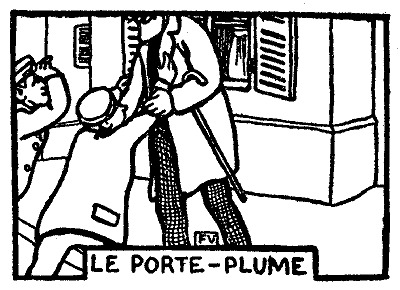
ルピック氏が、兄貴のフェリックスと弟のにんじんとを入れたサン・マルク寮というのは、そこから、中学校へ
今日もお昼に、彼らは、足を引きずり、羊の
「おい、にんじん、お前の
誰かがそういった。
ルピック氏は、こういうふうにして、息子たちに不意打ちを
にんじんと兄貴のフェリックスは、列から離れ、父親のほうへ駈け出して行く。
「やっぱりそうだ！」と、にんじんはいう――「僕、誰かと思った……。だって、
「お前は、わしの顔を見なきゃ、わしのことは考えんのだ」
と、ルピック氏はいう。
にんじんは、そこで、なんとか愛情を
――おやじは、もうおれを愛してはいないのかしら。と、心の中で
頭が、この悲しい考えでいっぱいになる。すると、にんじんはギリシャ語がちっとは進むかというルピック氏の問いに対して、うまい返事ができないのである。
にんじん――それも科目によるさ。訳のほうは作文よりゃ楽 だよ。だって、訳のほうは想像で行くもの。
ルピック氏――そんなら、ドイツ語は？
にんじん――こいつは、発音がとてもむつかしいや。
ルピック氏――こね野郎 ！ それじゃお前、戦争が始まって、プロシャ人に勝てるかい、奴 さんたちの言葉も話せないで……。
にんじん――ああ、そりゃ、そん時までには、ものにするさ。父さんはいつでも、戦争戦争って威 かすけど、僕が学校を卒業するまで、戦争は起こりっこないよ。待っててくれるよ。
ルピック氏――この前の試験には、何番だった？ まさか、びりっこけじゃあるまいな。
にんじん――びりっこけの奴 も、一人はいなくっちゃ。
ルピック氏――こね野郎！ わしは、お前たちに昼飯を御馳走 してやろうと思ってたんだぜ。それがさ、今日は日曜だとまだってこともあるが――普通の日じゃ、お前たちの勉強の妨げになるといかんからな。
にんじん――僕自身としちゃ、別に大してすることもないんだけど……。兄 さんは、どう……？
兄貴のフェリックス――それが、うまい工合に、今朝、先生が宿題を出すのを忘れたんだよ。
ルピック氏――それだけ余計復習ができるわけだ。
兄貴のフェリックス――もうとっくに覚えてるよ。昨日 のところとおんなじだもの。
ルピック氏――なにはともあれ、今日は帰ったほうがよかろう。わしは、なるべく日曜までいることにする。そうしたら、今日の埋 め合わせをしよう。
兄貴が口を
にんじんは、それを心配しながら待っていたのである。
――今度は前よりうまく行くかどうか、ひとつ、やってみよう。おやじは、おれが接吻するのを
そこで、意を決し、視線をまともに向け、口を上へ差し出して、彼は、近づいて行く。
が、ルピック氏は、また容赦なく、その手で彼をさえぎり、そしてこういった――
「お前は、その耳へ
にんじん――ああ、ごめんよ、父さん……。ほんとだ。僕がうっかりしてると、いつ、どんな間違いをしでかすか知れないね。前にも、誰かにそういわれたんだよ。だけど、このペンは、僕の耳んとこへ、そりゃうまく挾 まるもんだから、しょっちゅう、そのままにしとくのさ。で、つい忘れちゃうんだ。まったく、ペンだけでもはずさないって法はないね。
ああ、僕、ほんとうに、うれしいや、父さんは、このペンが怖 かったんだっていうことがわかって……。
ルピック氏――こね野郎！ 笑ってやがる。わしを眼っかちにし損 って……。
にんじん――ううん、そうじゃないんだよ、父さん。僕、ほかのことで笑ってるんだよ。さっきから、また、僕流 の馬鹿馬鹿しい考えを起こしたからさ、この頭ん中へ……。
［＃改ページ］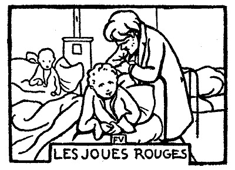
夜の点呼がすむと、サン・マルクの
これが、低く
ヴィオロオヌは、古靴をひっかけ、
彼は子供らしい物語に自ら興じ、ざっくばらんな打明け話や、いわゆる「心の想い出」というやつで、相手の眼を
にんじんは、ちょうど、彼と寝台を並べていたし、わけても、彼を
よほど前から、どうも気になっていたので、彼は、その晩、ヴィオロオヌが来ると、じっと聴き耳を立てていた。
「あめちょこ！ あめちょこ！」
返事がない。にんじんは
「やい、あめちょこ！」
あめちょこは、聞こえないらしい。にんじんは、
「だらしがねえぞ！ おれが見てなかったと思うのか！ やい、こら、あいつにキスさせなかったか！ え、どうだ。それでも、てめえ、あいつのあめちょこじゃないのか！」
彼は、人にからかわれた
が今度は、返事があった。
「だから、それがどうしたんだ」
腰を浮かしたと思うと、にんじんは、毛布を引っかぶった。
室長が、とっさの間に現われて、その場へ舞い戻っていたのだ。
「そうだ」と、ヴィオロオヌはいった――「そうだ、僕はお前にキスした。なあ、マルソオ、その通りいったっていいよ。お前はちっとも悪かないんだもの……。僕は、お前の
この言葉を聞いて、にんじんは、まだヴィオロオヌの声がかすかに耳へ響いてくるのに、急に眠った振りをしはじめる。それでも、頭だけは持ちあげて、その先を聞こうとしていた。
マルソオは、
彼は、時たま部屋の戸口に立って、中のようすを
「そうだ、僕の愛情は純の純なるものだ。それがつまり、このちびころの間抜け野郎にゃわからないんだ！」
さて、室長は、影のごとく静かに、マルソオの額の上へこごんでこれにキスをし、ちょび
にんじんは、しばらくようすを窺っている。ヴィオロオヌがまた突然引っ返してこないとも限らないからだ。すでにもうマルソオは、寝床の中で縮こまっている。毛布を眼までかぶり、その実、眠るどころではなく、どう考えていいかわからないさっきの
にんじんは待ちくたびれた。
あくる朝、洗面所で、みんながタオルの隅をちょいと水に浸し、頬骨の上を、さも冷たそうに、軽く
「あめちょこ！ あめちょこ！」
マルソオの頬は朱色に
「だって、そりゃ嘘だっていってるじゃないか。君が勝手にそう思ってるんだ」
室長が手の検査をしにやって来た。生徒たちは、二列に並んで、機械的に最初は手の甲、次に
ヴィオロオヌは、彼を寮監先生のところへやらねばならぬ。
寮監は、朝早くから起き、暗緑色の書斎で、歴史の講義を準備している。これは自分の暇々に、上級組の生徒にしてやろうというのだ。テーブル掛けの上へ、太い指先を平たく押しつけて、主要なところへ
彼は、だぶだぶの
にんじんは、彼の前へ突っ立った。帽子を
恐ろしい声で、寮監は
「なんの用だ？」
「先生、室長が、僕の手はきたないから、そういいに行けっていったんです。だけど、そんなことないんです」
で、もう一度、
「なに、そんなことはない

と、寮監はいった。
「先生、室長に、僕、にらまれてるんです」
にんじんがいった。
「なに？ にらまれてる！ 八日だ、わかったか」
にんじんは、相手の人物を
というのは、この寮監先生、実は時折、手の甲のことで
「先生……」と、にんじんは、ほんとにふてぶてしく、
すると寮監の眼は、不意に
「どう変なんだ？」
にんじんは、当てがはずれたらしい。彼が待ち設けていたのは――もっとも、その後はどうなるかわからないが――たとえば、アンリ・マルタン
寮監は、待っている。
にんじんはためらっている。うまい言葉が見つかりそうもないとわかるまでの間である。すると、急にしょげた顔をし、背中をまるめ、見るからにぎごちなく、照れくさそうに、彼は膝の間へ手をやり、ぺしゃんこになった帽子を抜き出す。だんだん前こごみになる。肩をすぼめる。それから、その帽子をそっと
その日、簡単に取調べがあって、ヴィオロオヌは暇を出された。出て行く時は悲痛だった。まず儀式というところだ。
「また
ヴィオロオヌはそういった。
しかし、誰にもそうとは信じられなかった。寮では、よく職員の入れ替えをやる。まるで、
 ……」と、書くのだが、
……」と、書くのだが、彼が暇を出されたというので、この連中は、ひどく悲しがった。
彼らは、最初の機会に、寮監をとっちめなけりゃならんと相談を決めた。つまり頬を
さしあたり、彼らは、悲しみを分ち合った。ヴィオロオヌは、自分が慕われているのを知り、休みの時間に
みんなの視線が、
ヴィオロオヌはそれに
「ちびころの
「へん！」と、にんじんは、叫ぶがいなや、もう一枚のガラスを陽気にぶちこわし――「なんだって、そいつにキスするんだい。どうして俺にしないんだ、え？」
それから、彼は、切れた手から流れる血を、顔いちめんに塗りたくり、こう附け加えた――
「おれだって、赤い
［＃改ページ］
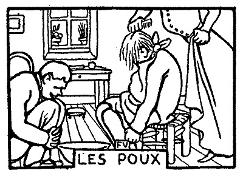
兄貴のフェリックスとにんじんとが、サン・マルク寮から帰って来ると、ルピック夫人は二人に足の
「お前のときたらさぞ黒いこったろう、にんじん」
ルピック夫人はいうのである。
彼女のいったとおりだ。にんじんのは、兄貴のより、いつも黒いのだ。どうしてだろう。二人は、すぐ
ルピック氏は、いつもの癖で、窓から窓を
「不注意、然れども
それから、にんじんについては――
「その気になれば優秀なる成績を示す。
にんじんが、これでたまには成績がいいのかと思うと、家族のものは、誰でも
それからさらに、ルピック氏は、彼のもじゃもじゃの
ところが、
「やあ、うまいもんだ。仕留めたぞ」
と、彼はいう。さて、いくぶんげんなりして、そいつをにんじんの髪の毛へなすりつける。するとルピック夫人は、両腕を空に向けて差し伸べ、さも精がなさそうに――
「そんなこったろうと思った。やれやれ、とんだ
姉のエルネスチイヌは、金盥を持って来る。それから、目の細かい
「僕のを先へやってくれ」と、兄貴のフェリックスが叫ぶ――「僕にもよこしやがったに違いない」
彼は、がむしゃらに指で頭をかきむしる。そして、頭ごとつっこむんだからバケツに一杯水を持ってこいという。
「静かにおしよ」と、姉はいう。心づくしを見せることが好きなのだ――「痛くしやしないわ」
彼女は、彼の首のまわりへタオルを
彼女が、「また一匹いた」というごとに、兄貴のフェリックスはバケツの中で足をじたばたさせながら、にんじんを
「あんたのほうは
最初のひと櫛で、にんじんは、それ以上の得点だ。姉のエルネスチイヌは、これこそ巣にぶつかったようなものだと思った。それもそのはず、
一同がにんじんを取り囲む。姉のエルネスチイヌは腕に
「これは、これは……。
兄貴のフェリックスは、
ルピック夫人――にんじん！ お前はどういう量見 でいるんだか、あたしたちにゃもうわからないよ。その年になって、大きな男の子が、それで恥ずかしくはないかい？ 足のことはまあいわないさ、ここで初めて見るんだろうから……。だが虱が食ってるのにさ、それを先生にいって取り締っても貰 わず、家のものに始末をしてくれともいわず……。どうしたっていうんだい、一体……。どんなにいい気持なのさ、生きたまま齧 られるっていうのは……。髪の毛ん中が、血だらけじゃないか。
にんじん――櫛でかきむしったんだよ。
ルピック夫人――どうだろう、櫛だとさ。それが姉さんへのお礼のしかたかい？ 聞いたろうね、エルネスチイヌ？ 旦那は、気むずかしくっていらっしゃるから、床屋の姐 さんに苦情をおっしゃるよ。わるいことはいわない、好きで食われてるんだから、さっさと虫の餌 にしておやり。
エルネスチイヌ――今日は、もうこれでおしまいよ、母さん。大きいのだけ落としといたわ。明日もうひと撫 でしてみるの。オードコロオニュを振りかけるってやり方があるのよ。
ルピック夫人――さあ、にんじん、お前は、金盥を持ってって、裏庭の土塀 の上へ出してお置き。村じゅうのものがぞろぞろ見て通れば、お前だってちったあ恥ずかしいだろう。
にんじんは金盥を取り上げ、出て行く。そして、そいつを太陽の下に
最初に近寄って来たのが、マリイ・ナネット婆さんである。彼女はにんじんの顔さえ見れば立ち止まって、近視の、小さな
「なんだね、そいつは……」
にんじんは返事をしない。彼女は金盥をのぞき込む。
「
彼女は指でさわってみる。口へ入れそうな手つきだ。なんとしても、わからないらしい。
「そいで、お前さんはそこでなにしてるんだい。
にんじんは、ちらりと眼を
「だからどうしたんだい？ そんなこと、婆さんには関係ないだろう。自分のことだけ心配するがいいや。僕のことは、ほうっといてくれ」
［＃改ページ］
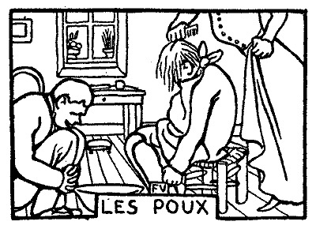
ルピック氏――おい、にんじん、お前は前学年には、わしの望みどおり勉強しなかった。通信簿に、もっとやれば出来るはずだと書いてある。お前はほかのことばかり考えている。禁じられた書物を読む。暗記力はなかなかあると見えて、試験の点は相当よろしい。ただ宿題を怠 けるんだ。おい、にんじん、真面目 にやろうという気になれ。
にんじん――大丈夫だよ、父 さん。まったく、前学年はすこしいい加減にやったところがあるよ。今度は、せいいっぱい頑張 ろうって気が起こってるんだ。ただし、全科目、級で一番っていうのは受合 えないよ。
ルピック氏――ともかく、そのつもりになってみろ。
にんじん――いいや、父さん、僕に望むところが大きすぎるよ。僕あ、地理や、ドイツ語や、物理化学はだめなんだ。とても出来る奴 が二、三人いるのさ。ほかのことときたら零 なくせに、そればっかりやってるんだもの。こいつらを追い越すなんて不可能だよ。だけど、僕、ねえ、父さん、僕、フランス語の作文でなら、近いうち、だんぜん牛耳 って見せるよ。そして、そいつを続けてみせるよ。それが、もし、僕の努力にもかかわらず不成功に終わったら、少なくとも僕はみずから悔 ゆるところなしだ。僕は、かのブルタスのごとく誇らかに叫ぶことができる――「おお美徳よ、汝 はただ一つの名に過ぎず！」
ルピック氏――うむ、そうだ。わしは、お前がやつらに負けないことを信じている。
フェリックス――父さんは、なんていったい？
エルネスチイヌ――あたし、聞いてなかったわ。
ルピック夫人――母 さんも聞いてなかった。どう、もう一度いってごらん、にんじん。
にんじん――うん、なんでもないよ。
ルピック夫人――へえ？ なんにもいわなかったのかい？ でも、あんなに、赤い顔をして、拳 を振り上げ、えらい勢 いでぺらぺら喋 ってたじゃないか？ あの声ときたら村の端 まで届くほどだった。その文句をもう一遍 いってごらん、みんなが聴いとくと為 になるからさ。
にんじん――それにゃ及ばないよ、母さん。
ルピック夫人――いいからさ。誰の話なの？ なんていう名前の人だっけ？
にんじん――母さんの知らない人だよ。
ルピック夫人――なおのことじゃないか。さ、お願いだから、戯談 はやめて、母さんのいうことをおきき。
にんじん――そんならいうけど、僕たち、今、二人で話をしてたの。父さんが僕に友だちとしての忠告をしてくれたもんで、そのお礼をいうつもりで、ふと、ある考えが浮かんだのさ。つまり、ブルタスっていうローマ人のように、誓いを立てる……つまり美徳のなんたるかを……。
ルピック夫人――つまりつまり、なんだい、そりゃ……。しどろもどろじゃないか。それより、さっきいった文句を、一字一句変えずに、おんなじ調子でいってごらん。母さんは、別にペルウの国をよこせっていってるわけじゃないだろう。だから、それくらい、母さんのためにしてくれたっていいじゃないか。
フェリックス――僕がいってみようか、母さん。
ルピック夫人――いいえ、にんじんがまずいってから、そのつぎ、お前がおいい。両方較 べてみるから……さ、にんじん、早くさ。
にんじん（うるみ声で、呟 くように）――おお、び、び、びとくよ……なん……なんじは……ただ、ひとつの……な、なにすぎず……。
ルピック夫人――なんともしょうがない。ひとすじ繩 じゃ動かないや、この大将は……。母親の気にいることをするくらいなら、叩きのめされたほうがましだと思ってるんだ。
フェリックス――どら、母さん、奴 はこういったんだよ――（彼は眼玉をぎょろりとさせ、挑 むような視線を投げて）もしも僕がフランス語の作文で一番にならなかったら……（頬 をふくらませ、足を踏み鳴らし）僕は、かのブルタスのごとく叫ぶだろう……（両腕を高く挙 げ）おお、美徳よ……（その腕を膝の上にどさりと落とし）汝はただ一つの名に過ぎず！ こういったんだよ。
ルピック夫人――ひやひや。大出来 だ。にんじん、じゃまあ、おめでとう。それにしても、真似 は実物だけの値打ちはないんだから、それだけに、お前が片意地なことは、母さん、残念だよ。
フェリックス――だけど、にんじん、そいつをいったのは、ほんとにブルタスだったかい？ ケエトオじゃなかったかい？
にんじん――たしかにブルタスだ。「かくて彼は、友の一人が差し伸べし剣 に、われとわが身を貫 いて死せり」
エルネスチイヌ――にんじんのいう通りだわ。そして、ブルタスは、黄金を杖 に忍ばせて、気違いの真似をしたのね。
にんじん――違うよ、姉 さん、そんなことをいうと頭がこんぐらかるじゃないか。僕のいうブルタスと姉さんのとは別物だよ。
エルネスチヌ――そうかしら……。それにしてもさ、ソフィイ先生が筆記させる歴史のお講義は、あんたの学校の先生と、値打ちからいって違いはないわよ。
ルピック夫人――そりゃ、どうでもいい。喧嘩 はおよし。肝腎 なことは、家族の一人に、ブルタスがいるってこった。家 には現にいるんだ。にんじんのお蔭で、あたしたちは肩身が広いわけだ。それに、だあれも、自分たちの名誉を知らずにいたんだ。新しいブルタスを崇 めようじゃないか。このブルタスはラテン語を司教さんのようにしゃべる。そのくせ、聾者 がいても、ミサを二度繰り返してくれない。ぐるっとまわらしてごらん。正面から見ると、今日 おろしたばかりの上着にもう汚点 をくっつけ、後 ろから見ると、ズボンが破けてる。おお神様、どこへまたもぐり込んだんだろう。戯談じゃない、まあ、見てやっておくれ、あのブルタスにんじんの顔つきをさ。しょうがないブルドックだよ、ほんとに！
［＃改ページ］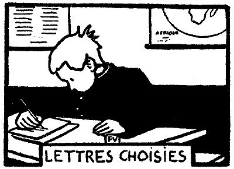
サン・マルク寮にて
親愛なる父上
休暇中の魚捕 りが祟 って、目下気分に動揺を来たしています。腿 に太い「釘 」――つまり腫物 ができたのです。僕は床に就 いています。仰向 けに寝たきりで、看護婦のおばさんが罨法 をしてくれます。腫物は、潰 れないうちは痛みますが、あとになると想い出しもしないくらいです。ただ、この腫物の「釘」は、ヒヨコのように殖 えるんです。一つがなおると、また三つ飛び出すという具合です。いずれにしても、大したことはないだろうと思います。
休暇中の
親愛なるにんじん殿
其許 は目前に初の聖体拝受 を控え、しかも教理問答 にも通 いおることなれば、人類が「釘」に悩まされた事実は其許に始まらざること承知の筈 だ。イエス・キリストは、足にも手にもこれを受けた。彼は苦情をいわなんだ。しかも、その「釘」たるや、本物の釘だったのだ。
元気を出すべし。
元気を出すべし。
 々
々
親愛なる父上
僕は今日、歯が一本生 えたことをお知らせできるのは愉快です。年からいえばまだですが、これはたしかに、早生 の智慧歯 です。希 くは、一本でおしまいにならないことを。そして、希くは、僕の善行と勉強によって、父上の御満足を得んことを。
僕は今日、歯が一本
頓首
親愛なるにんじん殿
ちょうど其許 の歯が生えようとしつつある時、余の歯は一本ぐらつきはじめた。そして、昨朝、ついに思い切って抜け落ちた。かように、其許の歯が一本殖 えるごとに、其許の父は一本ずつ歯を失う次第 だ。それゆえ、すべてもともとにして、家族一同の歯は、その数に於いて変りなし。
ちょうど
々
親愛なる父上
まあ聴 いてください。昨日は、僕らのラテン語教師、ジャアク先生の聖名祭 です。で、衆議一決、生徒たちは、クラス全体の祝意を表するために、僕を総代に選びました。僕は大いにこれを光栄とし、適宜にラテン語の引用をはさんで、長々と演説の準備をしました。正直なところ、満足な出来栄 です。僕は、そいつを大型の罫紙 に清書しました。いよいよ当日になり、同僚たちの「やれよ、やれよ」と囁 く声に励まされ、ジャアク先生がこっちを向いていない時を見はからって、僕は教壇の前に進み出ました。が、やっと紙をひろげ、せいいっぱいの声で、
尊き師の君よ
と読み上げた瞬間、ジャアク先生は、憤然として起 ち上がり、こう怒鳴 りました――「早く席に着いて！ なにぐずぐずしとる！」
しかたがありません。僕は逃げ出すと、そのまま腰をかけました。同僚たちは、本で顔をかくしています。すると、ジャアク先生は、すごい権幕 で、僕にあてました――
「練習文を訳して！」
父上、以て如何 んとなさいます。
まあ
尊き師の君よ
と読み上げた瞬間、ジャアク先生は、憤然として
しかたがありません。僕は逃げ出すと、そのまま腰をかけました。同僚たちは、本で顔をかくしています。すると、ジャアク先生は、すごい
「練習文を訳して！」
父上、以て
親愛なるにんじん殿
其許 が他日代議士にでもなればわかることだ。その手の人物はいくらでもいるよ。人各々 その畑あり、先生が教壇に立たるるのは、これ明らかに演説をなさるがためであって、其許の演説を聴かれるためではない。
＊
親愛なる父上
例の兎はたしかに地歴教師ルグリ先生の処 へお届 けしておきました。むろん、この贈り物は先生を悦 ばせたようです。厚くお礼を申してくれとのことでした。僕がちょうど濡れた雨傘 を持って部屋へはいって行ったもんですから、先生は自分でそいつを僕の手から奪い取るようにして玄関に持って行かれました。それから、僕たちは、いろんな話をしました。先生は、僕がその気になれば、学年末には地歴の一等賞を獲得できるのだがといわれました。しかし、こんなことがあるでしょうか。僕は、この話の初めから終りまで、のべつ起 ちどおしです。ルグリ先生は、その点以外実にお愛想がいいのですが、とうとう僕に椅子ひとつ薦 めずじまいです。
忘却 か、はたまた、非礼か？
僕はそれを知りません。ただし、できれば、父上の御意見を伺いたいものです。
例の兎はたしかに地歴教師ルグリ先生の
僕はそれを知りません。ただし、できれば、父上の御意見を伺いたいものです。
親愛なるにんじん殿
よく不平を言う男じゃ。ジャアク先生が席に着けといえば、それが不平、ルグリ先生が起 ったままでいさせれば、それがまた不平か。たぶん其許 は、まだ一人前の扱いを受けるには、年が若すぎるのだよ。それに、ルグリ先生が椅子を薦められなんだことは、まあまあ恕 すべきだ。其許の丈 が低いため、先生はきっと、もう腰かけているものと勘違いされたのだよ。
＊よく不平を言う男じゃ。ジャアク先生が席に着けといえば、それが不平、ルグリ先生が
親愛なる父上
近々パリーへお出かけの由、ああ首府 見物、僕も行きたいのですが、今度は心のみ父上のお伴をして、その愉 しみを分つことにします。僕は学業のためにこの旅行を断念しなければならないことを知っています。しかし、この機会を利用して、父上にお願いがあるのです。本を一、二冊買って来ていただけませんか。今持っている本はみんな暗記してしまいました。どんな本でもかまいません。もとを洗えば、似たりよったりです。とはいいますが、僕、そのうちでも特別に、フランソア・マリ・アルウェ・ド・ヴォルテエルの「ラ・アンリヤアド」と、それから、ジャン・ジャック・ルウソオの「ラ・ヌウヴェル・エロイイズ」とが欲 しいんです。もし父上がそれを持って来てくだされば（本はパリーではいくらもしません）、断じて、室長が取り上げるようなことはありません。
近々パリーへお出かけの由、ああ
親愛なるにんじん殿
御申出 の文士は、其許や余らとなんら異なるところなき人間だ。彼らが成したことは其許も成し得るわけだ。せいぜい本を書け。それを後で読むがよかろう。
＊
親愛なるにんじん殿
今朝の手紙には驚き入った。読み返してみたが、やはり駄目 だ。第一、文章も平生 と違い、言うことも珍妙不可解で、およそ其許の柄 でも、また余の柄でもないと思われることばかりだ。不断 は、細々 とした用事を語り、席順がどうなったとか、先生の特長または欠点がどうとか、新しい級友の名前、下着類の状態、さては、よく眠るとか、よく食うとか、書いてあることはそんなことだ。
余にとっても、実にそれが興味のあることで、今日はまったく何が何やらわからん。いかなる都合 でか、目下、冬だというのに、時まさに暮春云々とある。一体なんのつもりなんだ？ 襟巻でも欲しいというのか？ 手紙に日附はなし、そもそも余に宛てたのか、それとも犬に宛てたのか、てんでわからん。字体もまた変えてあるようだし、行のくばりといい、頭文字 の数といい、すべて意想外だ。要するに、其許は、誰かを馬鹿にしているらしいが、察するところ、相手は其許自身に相違ない。余はこれが罪に値するというのではないが、ただ一応の注意をしておくのだ。
今朝の手紙には驚き入った。読み返してみたが、やはり
余にとっても、実にそれが興味のあることで、今日はまったく何が何やらわからん。いかなる
親愛なる父上
前回の手紙につき、急ぎ釈明 のため一言 します。父上は、あの手紙が韻文 になっていることをお気づきにならなかったのです。
［＃改ページ］前回の手紙につき、急ぎ
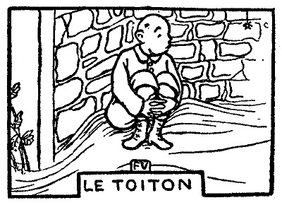
この小さい屋根の下には、これまで
 、兎、豚がすんでいたのだが、今はからっぽで、休暇中は、いっさいの所有権をにんじんが独占している。彼は
、兎、豚がすんでいたのだが、今はからっぽで、休暇中は、いっさいの所有権をにんじんが独占している。彼は彼の主な遊びは、小屋の
背中をすべっこい壁にもたせかけ、
食器を洗う水が、すぐそばを、流しの口から流れ落ちる、ある時は滝のように、ある時は一
突然、非常警報だ。
呼び声が近づく。
「にんじん！ にんじん！」
一つの顔がこごむ。にんじんは、団子のようになり、地べたと壁の間へめり込み、息を殺し、口を大きく
「にんじん！ そこにいるかい？」

「いないや、あの
行ってしまうと、にんじんのからだは、ややのんびりし、
彼の考えは、また沈黙の長い
すると、
にんじんは、なかば尻を浮かし、眼を放さず、
それだけのことだ。
蜘蛛は、上へ引っ返す。にんじんはまた坐った。
やがて、彼の夢想は、砂を混えたか細い流れのように、
［＃改ページ］
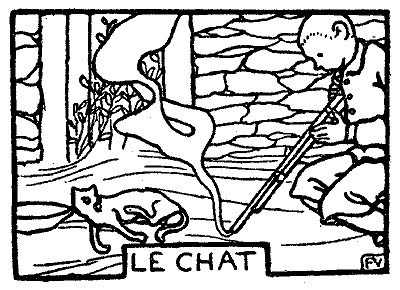
にんじんは、こういう話を聞いた。――「
 蛄の
蛄のところで、彼は猫を一匹
「たらふくつめ込め」
彼は猫の
「
猫は
「すんだか。
にんじんは、相変わらずなでながら、
「もちろん、もう一杯お代りが
こういって、彼は、その
爆音で、にんじんは、眼がくらむ。彼は、小屋まで飛んでしまったかと思う。
頭の半分はどっかへ行ってしまった。そして、血が牛乳茶碗の中へ流れ込んでいる。
「死ななかったかな？
にんじんは、そういったまま、身動きもできない。片眼だけが、黄色く光り、それが不安なのだ。
猫は、からだを
にんじんは、これで初心ではない。幾多の
はじめ、彼は用心深くちょっかいを出してみる。それから、
「誰だい、一体、猫が死ぬ時は泣くなんていった奴は……」
にんじんは、
が、しかし、自分も、締めつけられる思いだ。よろめき、へとへとになり、地べたに倒れ、顔と顔とを押しつけ、両眼は猫の片眼に
にんじんは、今、鉄の寝台に横たわっている。
両親と、急報を受けたその知合いの連中が、小屋の低い天井の下を這うようにして、惨劇の行われた場所を検分した。
「どうでしょう、心臓の上で猫を
この
……彼は小川に沿うて
白い
牛が一匹近寄って来る。立ち止まる。溜息を
何という静かさだ！ もしこの
にんじんは、口を
蛄にんじんは苦悶に打ちひしがれ、逃げることすらできない。
蛄喉をめがけて、伸び上がってくる。
ぱちぱち音を立てる。
もう、彼らは、
［＃改ページ］

にんじんは、最初、もやもやした丸いものが、飛んだり
にんじんは、まだ
年を取った、一週間目ぐらいのやつは、後半身にやたら力を入れすぎて、からだが伸びたようになり、宙に浮きながら電光形に歩く。一日たったやつは、
「
と、にんじんはいう。
「
と、パジョオルはいう。
「きっと、
「まあ、そんなとこさ」と、パジョオルがいう――「一匹から上になると、哺乳器ってやつをあてがわにゃならん。薬屋で売ってる、ああいうやつさ。長くは続かねえ。母親が
彼は、親羊を抱き上げ、
「この母親にでも、いまにまた、人情ってものがもっと出るのかねえ」
にんじんはいう。
「
パジョオルがいう。
「僕は、やっぱり、さっきいったようにしたほうがいいと思うなあ。どうして、しばらくの間、子供の世話をほかの牝羊にさせないのさ」
「あっちで
なるほど、小屋の
「ここじゃ、子供を盗んだりする女はいねえ」
パジョオルがいう。
「
彼は、
彼はまた、それからそれへ、人間と羊とを比較した。そして、仔羊の名前が知りたくなった。
仔羊たちが、ごくごく乳を吸っている間、おっ
「こいつは
「そのとおり。おめえだって、
彼は、にんじんに、その水を飲んでみろと
「ダニ公をやろうか、ダニ公を……」
と、パジョオルはいう。
「ああ、おくれ。ありがたいぞ」
にんじんは、何か知らずに、そういってみた。
パジョオルは、母羊の深い毛をかき分けて、
もう、ダニは仕事にかかり、皮膚を襲い出した。にんじんは指にちくちくと痛みを感じた。
ええい、どうにでもなれ！ にんじんは、そいつを握りしめた。
それから
縞の消えた
［＃改ページ］
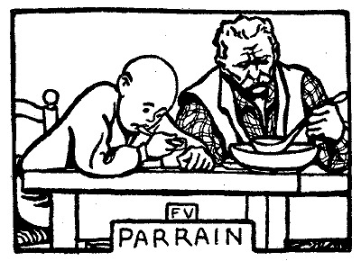
どうかすると、ルピック夫人は、にんじんにその名づけ親のところへ遊びに行き、泊まってくることを許すのである。この名づけ親というのは、
「やあ、来たな、
と、彼はいう。
「来たよ、おじさん……。
にんじんは、そういうが、接吻はしない。
「二人で一つありゃたくさんだ」
にんじんは
「それが
にんじんは、そう考えている。
で、二人は、相変わらず
この爺さん、平生は一週に一度、一週間分の炊事をするだけだが、今日は、にんじんのために、
さて、彼らは、釣りに出かける。
爺さんは水の岸に腰をおろし、テグスを手順よくほどいてゆく。彼は、敏感な釣竿を重い石で押さえておく。そして、大きなやつしか釣り上げない。魚は、
「いいか、
にんじん――どうして、三度さ？
おじさん――最初のは、なんでもない。魚がせせっただけだ。二度目が、ほんものだ。呑み込んだんだ。三度目は、もう大丈夫。離れっこない。いくらゆっくり揚げてもかまわんよ。
にんじんは
「十六……十七……十八……」
おじさんは、頭の真上に太陽が来ると、昼飯に帰ろうという。彼は、にんじんに
「こんな
にんじん――こいつは、舌の上で溶けるね。いつも、母 さんのこしらえるのは、そう不味 かないけど……。でも、こんな具合にはいかないや。クリームを倹約するからだよ、きっと。
おじさん――やい、坊主、お前の食べるところを見てると、わしゃうれしいよ。おっ母 さんの前じゃ、腹いっぱい食えないだろう。
にんじん――母さんの腹具合によってだよ。もし母さんがお腹 をすかしてれば、僕も、母さんの腹いっぱい食うんだ。自分の皿へ取るだけ、僕の皿へも、うんとつけてくれるからね。しかし、母さんが、もうおしまいだっていう時は、僕もおしまいさ。
おじさん――もっとくれっていうんだ、そういう時は……阿呆 ！
にんじん――言うは易 しさ、おじさん。それに、いつも饑 いくらいでよしといたほうがいいんだよ。
おじさん――わしは子供がないんだが、猿の尻 でも舐 めてやるぜ、その猿が自分の子供なら……。なんとかしろよ。
彼らは、その日の日課を
［＃改ページ］
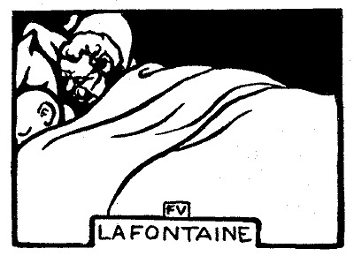
彼はおじさんと一緒に寝はするが、それは、気持よく眠るためではない。部屋は寒いには寒い。しかし
「おっ
と、おじさんはいう。
にんじん――というよりも、母 さんには、僕がそれほど怖くないんだよ。母さんが兄貴を打 とうとすると、兄貴は箒 の柄 へ飛びついて、母さんの前へ立ちふさがるんだ。母さんは、手が出せずに、それっきりさ。だもんで、兄貴に向かっちゃ、情味 で行くよりしょうがないと思ってる。それでこういうのさ――フェリックスはとても感じやすい性質 だから、打 ったり叩 いたりしてもなんにもならない。にんじんのほうは、まだそれでいいけれどって……。
おじさん――お前も箒を試 してみりゃいいのに……。
にんじん――そいつがやれりゃ、なんでもないさ。兄貴と僕とは、よく擲 り合いをするんだ。本気でやることもあるし、ふざけてやる時もあるけど……。どっちもおんなじぐらい強いんだぜ。だから僕だって、兄貴のように、打たれないですむわけなんだ。でも、母さんに向かって、箒を手に持つなんてことをしてごらん。母さんは、僕がそいつを取ってやるんだと思うよ。箒は僕の手から母さんの手に渡る。すると、母さんは、僕をひっぱたく前に、たぶん、「ご苦労」っていうだろう。
おじさん――眠 ろよ、坊主 、もう眠ろ！
両方とも、
突然、にんじんがうとうとしはじめた頃、爺さんは、彼の腕をつかまえる。
「そこにいたか、坊主……。ああ、夢を見た」と、爺さんはいう――「わしゃ、お前がまだ、泉の中にいるんだと思った。覚えてるかい、あの泉のことを？」
にんじん――覚えてるどころじゃないさ。ねえ、おじさん、小言 を言うわけじゃないけど、幾度 も聞くぜ、その話は……。
おじさん――なあ、坊主、わしゃ、あのことを考えると、からだじゃう、顫 えあがるよ。わしは、草の上で眠ってた。お前は泉のへりで遊んでいた。お前はすべった。お前は落ち込んだ。お前は大きな声を立てた。お前はもがいた。それに、わしは、なんたるこっちゃ……なにひとつ、聞こえやせん。その水といったら、猫が溺 れるほどもないのだ。だが、お前は、起き上がらなんだ。災難は、つまり、そこからさ。一体全体、起き上がることぐらい考えつかなかったかい？
にんじん――泉の中で、どんなことを考えてたか、僕が覚えてると思う、おじさん？
おじさん――それでも、お前が水をばちゃばちゃいわせる音で眼が覚 めた。やっとこさで間に合ったんだ。この糞坊主 ！ 可哀そうに、ポンプみたいに水を吐くじゃないか。それから、着物を着替えさせた。ベルナアルの日曜に着る服を着せてやったんだ。
にんじん――ああ。あいつは、ちかちかしたっけ。からだを掻きづめさ。馬の毛で作った服だよ、ありゃ。
おじさん――そうじゃないよ。だが、ベルナアルは、お前に貸してやる洗いたてのシャツがなかったんだ。わしは、今、こうして笑ってるが、あれでもう一、二分、うっちゃらかしといてみろ、起こした時は、お前は死んでるんだ。
にんじん――今頃は、はるか遠くにいるわけだね。
おじさん――よせ、こら！ わしも、つまらんことをいい出した。で、それからっていうもの、夜、ぐっすり眠った例 しがないのだ。一生安眠を封じられても、こりゃ、天罰 だ。わしは文句をいうところはない。
にんじん――僕は、文句をいいたいよ、おじさん。眠くってしょうがないんだ。
おじさん――眠 ろよ、坊主、眠ろよ！
にんじん――眠 ろっていうなら、おじさん、僕の手を放してよ。眠っちまったら、また貸したげるから……。それから、この脚 をそっちへ引っこめとくれよ。毛が生 えてるんだもの。人が触 ってると、僕、眠られないんだ。
［＃改ページ］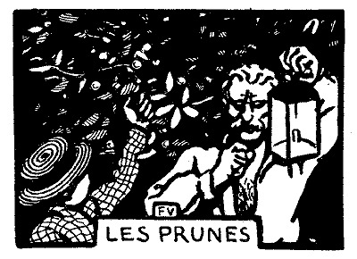
しばらく寝つかれないで、彼らは
「
にんじん――ううん。
おじさん――わしもだ。どら、起きてやろうかな。お前も、よかったら、蚯蚓捕 りに行こう。
「よかろう」
と、にんじんはいった。
二人は寝台から飛びおり、着物をひっかけ、カンテラに火を
にんじんがカンテラを
「踏みつけないように気をつけろ」と、彼は、にんじんにいう――「そっと歩けよ。わしも
「どうも、
おじさん――蚯蚓はきたなかない。蚯蚓は世の中で一番きれいなもんだ。奴あ、土を食って生きてる。だから、潰 してみろ、土を吐き出すだけだ。わしだったら、食ってみせる。
にんじん――僕だったら、おじさんに進呈すらあ。食べてごらん。
おじさん――こいつらは、ちっとでけえや。まず、火であぶらにゃ。それから、パンの上へなすりつけるんだ。だが、小さいのなら、生 で食うぜ。そら、李 についてる奴よ、いってみりゃ……。
にんじん――うん、そんなら知ってるよ。だから、家 のもんがおじさんをいやだっていうんだ。母 さんなんか、ことにそうだ。おじさんのことを考えると、胸が悪くなるってさ。僕あ、真似 はしないけど、おじさんのすることは好 いと思ってるよ。だって、おじさんは、文句をいわないもの。僕たちは、まったく意気投合 してるんだ。
彼は、カンテラを
「こういうのが、一等うまいんだ」
にんじん――なに、僕だって、しまいに、それくらいのことはするさ。そんなのをおじさんみたいに食べてみせるよ。ただ、あとが臭 いといやなんだ。母さんが、もしキスした時、気がつくもの。
「臭いもんか」と、おじさんはいう。そして、にんじんの顔へ息を吐きかける。
にんじん――ほんとだ。煙草 の臭いがするっきりだ。こりゃひどい、鼻じゅういっぱい臭うぜ。……僕、おじさんは大好きだ、いいかい。だけど、もし煙管 を吸わなかったら、もっと、それこそ、ほかの誰よりも好きなんだがなあ。
おじさん――いうなよ、坊主……。こいつは、人間の持ちをよくするんだ。
［＃改ページ］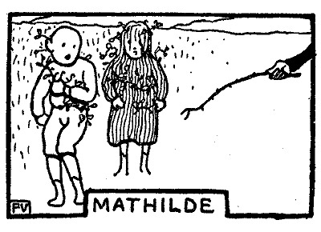
「あのね、
なるほど、原っぱでは、小娘マチルドが、白い花をつけた
そこでこの牡丹蔓だが、まず頭の上で
やがて、彼は、
「もう動いちゃいけないよ。さ、お前の番だ、にんじん！」
今度は、にんじんが、新郎の衣裳をつける番だ。同じように牡丹蔓を捲きつける。が、ところどころへ、
「手をつないで！」と、フェリックスはいう――「前へ進め！ 静かに！」
彼らは、足をそろえ、からだを離して歩き出す。マチルドは、お
兄貴のフェリックスは、彼らを原っぱじゅうひっぱりまわす。彼は
彼は、二人を縦横に歩かせる。
「止まれっ！」と彼はいう――「ずれて来やがった」
が、マチルドの
「あ
マチルドは、
牡丹蔓の節くれが髪の毛をひっぱるのだ。兄貴のフェリックスは、髪の毛ごとそいつを取り
「ようし……。さあ、婚礼がすんだ。キスし合って……」
二人が遠慮していると、
「おい、どうしたんだい。キスしないかよ。婚礼がすんだら、キスするんだよ。両方から寄っかかって行きな。なんとかいうんだぜ。まるで
自分が
にんじんは勇気を奮い起こす。
「
マチルドは、されたとおり、彼にキスを返す。たちまち二人ともぎごちなく、
兄貴のフェリックスは、そろそろ敵意を示しだす。
「やあい、
彼は二本の指をこすり合わせ、唇を中へ捲き込み、足をじたばたさせた。
「ずうずうしい奴！ ほんとに、その気になってやがらあ」
「第一、照れてなんかいやしない」と、にんじんはいった――「それから、
しかし、折も折、その母さんが、自分で、「そいつはいかん」と返事をしに来た。彼女は原っぱの
彼女は、まっすぐにやって来る。嵐と同様、避けることはできない。
「ぴしゃっと来るぞ」
兄貴のフェリックスはいった。もう原っぱの
にんじんは決して逃げない。
マチルドは、
にんじん――心配しないでいいよ。母さんって人、僕を識 ってるんだ。僕だけとっちめようてんだ。万事引き受けるよ。
マチルド――そりゃいいのよ。だけど、あんたの母さん、なんでもうちの母さんにいいつけるわ。うちの母さん、あたしを打 つわ。
にんじん――折檻 する。セッカンするっていうんだよ、親が子供をぶつ時は……。お前の母さん、折檻するかい？
マチルド――ええ、時々……。事柄 によるわ。
にんじん――僕なんか、もうきまってるんだ。
マチルド――だけど、あたし、なんにもしやしないわ。
にんじん――いいったら……。そら、エヘン。
ルピック夫人は近づいた。もう逃げようったって逃がさない。
「いいじゃないか、そんなこと……
［＃改ページ］
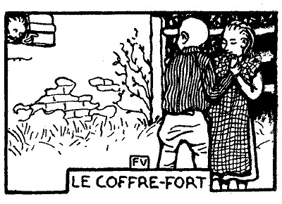
翌日、にんじんはマチルドに会う。彼女は彼にいう――
「あんたんちの
にんじん――僕、どうだったっけ、忘れちゃった。だけど、お前、ぶたれるわけはないよ。僕たちなんにも悪いことしやしないんだもの。
マチルド――ええ、そうよ。
にんじん――僕、お前と夫婦になってもいいっていったろう、あれ、真面目 にそういったんだよ、ほんとだよ。
マチルド――あたしだって、あんたと夫婦になってもいいわ。
にんじん――お前は貧乏で、僕は金持ちだから、ほんとなら、お前を軽蔑 しちゃうんだけど、心配しないだっていいよ。僕、お前を尊敬してるから……。
マチルド――お金持ちって、いくらもってんの。
にんじん――僕んちには、百万円あるよ。
マチルド――百万円って、どれくらい？
にんじん――とてもたくさんさ。百万長者っていや、いくらお金を使ったって使いきれないんだから……。
マチルド――うちの父 さんや母さんは、お金がちっともないって、よくこぼしてるわ。
にんじん――ああ、うちの父さんや母さんだってそうだ。誰でも、人に同情されようと思ってこぼすんだ。それと、妬 んでる奴 にお世辞 を使うのさ。だけど、僕たちは、金持ちだってことは、ちゃんとわかってるんだ。毎月 一日 には、父さんが一人っきりでしばらく自分の部屋へひっこんでる。金庫の錠前 がギイギイって音を立てるのが聞こえるんだ。夕方だろう、それが……。まるで青蛙 が鳴くみたいさ。父さんは誰 あれも知らない――母さんも、兄貴も、姉 さんも誰あれも知らない文句をひと言 いうんだ。それを知っているのは、父さんと僕とだけさ。すると、金庫の扉が開く。父さんは、そん中からお金を出して、お勝手のテーブルの上へ置きに行く。なんにもいわずにさ。ただ、お金をがちゃがちゃっていわせるだけだ。それで、竈 の前で用をしてる母さんに、ちゃんとわかるんだ。父さんが出て行く。母さんは後 ろを振り向く。お金をかき集める。毎月毎月、そのとおりのことをするんだ。それが、もうずいぶん長く続いてるもんだもの、金庫の中に、百万円の上 はいっている証拠だろう。
マチルド――で、開ける時に、父さんがいう文句って、そりゃ、どんな文句？
にんじん――どんなって、訊 くだけむだだ。僕たちが夫婦になったら教えてあげるよ。ただ、どんなことがあっても人にしゃべらないって約束しなきゃ……。
マチルド――今、すぐ教えて……。そしたら、今すぐ、人にしゃべらないって約束するわ。
にんじん――だめだよ。父さんと僕との秘密だもの。
マチルド――あんなこといって、自分でも知らないくせに……。知ってるなら、あたしにいえるわけだわ。
にんじん――おあいにくさま、知ってますよだ。
マチルド――知らないよだ。知らないよだ。やあい、やあい、いい気味 だ。
「よし、知っていたら、何よこす」
と、にんじんは、
「なんでもいいわ。なに？」
マチルドは、ためらい
「僕がさわりたいところへさわらせろよ。そしたら、文句を教えてやら」
にんじんが、こういうと、マチルドは、相手の顔を見つめた。よくわからないのだ。彼女は、
「先へ文句を教えてよ、にんじん」
にんじん――じゃ、指切 りだよ。教えたら、僕がさわりたいところへさわらせるね。
マチルド――母さんが、指切りなんかしちゃいけないって。
にんじん――じゃ、教えてやらないから。
マチルド――いいわよ、そんな文句なんか……。あたし、もうわかっちゃった。そうよ、もうわかっちゃったわ。
にんじんは、しびれを切らし、手っ取り早く
「ねえ、マチルド、わかってるもんか。ちっともわかってやしないや。だけど、君がしゃべらないっていうなら、それでいいよ。父さんが金庫を開ける前にいう文句はね、いいかい、オペレケニュウ。さあ、もうさわってもいいね」
「オペレケニュウ！ オペレケニュウ！」――一つの秘密を知った
で、にんじんが、返事もせずに、いきなり片手を伸ばして向かって来るので、彼女は逃げ出す。彼女のケケケケという笑い声がにんじんの耳にはいる。
彼女の姿が消えると、
後ろを振り向く。
「見たぞ、にんじん。おっ
にんじん――ふざけてたんだよ、ピエエルおじさん。あの娘 をつかまえようと思ったんじゃないか。オペレケニュウってのは、僕がいいかげんに作った名前だよ。第一、ほんとのことは、僕だって知りゃしないよ。
ピエエル――安心しな、にんじん、オペレケニュウはどうだっていいんだ。おめえのおっ母 さんにそんなこたあいやしねえ。それより、もう一つのことをいわあ。
にんじん――もう一つのことって？
ピエエル――そうよ、もう一つのことよ。おらあ、見たぞ、見たぞ、にんじん。そうじゃねえっていってみな。へえ、年にしちゃ、やるぞ、おめえ。いいから、みてろ、今夜、耳がどうなるか。いやってほどひっぱられるぞ、やい！
にんじんは、別にいうべきことはない。髪の毛の自然な色が消えたかと思うほど顔を赤くし、両手をポケットにつっこみ、鼻をすすりながら、
［＃改ページ］
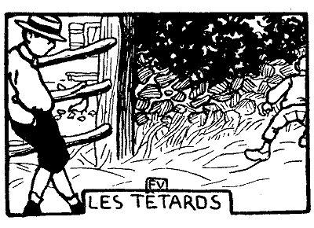
にんじんは、ひとり、中庭で遊んでいる。それも、ルピック夫人が窓から見張りのできるように、まん中にいるのである。で、彼は、
「
「
と、にんじんは答える。
レミイ――どうして？ 僕がかい。
にんじん――だって、僕だと許しちゃくれないからさ。
ちょうど、ルピック夫人が、窓ぎわに姿を現わす。レミイはいう――
「おばさん、あのねえ、すみませんけど、僕、オタマジャクシ
ルピック夫人は、窓ガラスに耳を押しつける。レミイは、声を張り上げて、もう一度いい
「いけないってさ」――にんじんはいう――「きっと、
レミイ――じゃあ、しょうがないや。とっても面白 いんだけどなあ。なあんだい、いけないのか。
にんじん――いろよ。ここで遊ぼう。
レミイ――いやなこった。オタマジャクシ捕りに行ったほうが、ずっといいや。暖 かいんだもん、今日は……。僕、笊に何杯も捕ってみせるぜ。
にんじん――もう少し待ってろよ。母さんは、いつでも、はじめいけないっていうんだ。後 になって、どうかすると、また意見が変わるんだ。
レミイ――じゃ、十五分かそこらだよ。それより長くはいやだぜ。
二人とも、そこに突っ立ったまま、両手をポケットに入れ、
「どうだ、いったとおりだろう」
なるほど、戸が
「おや、お前さんまだいたの、レミイ？ もう行っちまったのかと思った。お
レミイ――おばさん、だって、にんじんが待ってろっていうんだもの……。
ルピック夫人――なに、そりゃほんとかい、にんじん？
にんじんは、そうだともそうでないともいわない。自分ながら、もうわからないのだ。彼はルピック夫人のどこからどこまでを
「そんなこというけど、考えてごらん」と、ルピック夫人はいう――「母さんは
その後へは、ひと
彼女は、また踏段を登って行く。ついでに笊も持ってはいってしまう。にんじんがオタマジャクシをしゃくうために持って行く笊だ。そして、そいつは、彼女がわざわざ
レミイは、もう、はるか
ルピック夫人は、ほとんど
レミイは、向こうのほうを、川を目がけて、
せっかくの一日を棒に振って、にんじんは、もう、何をして遊ぶ気にもならない。
彼は、すばらしい慰みを取り逃がした。
これから、そろそろ
彼は、それを待つばかりである。
［＃改ページ］
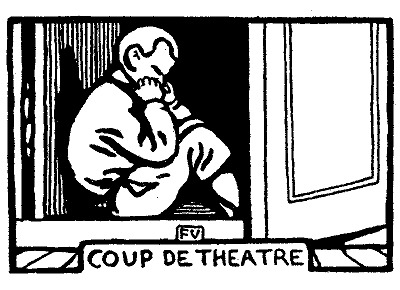
ルピック夫人――どこへ行くんだい？
にんじん（彼は新しいネクタイをつけ、靴へはびしょびしょに唾 をひっかけた）――父 さんと散歩に行くの。
ルピック夫人――行くことはならない。わかったかい？ さもなきゃ――（彼女の右手が、勢いをつけるために、後 ろへさがる）
にんじん（低く）――わかったよ。
にんじん（柱時計の下で考え込みながら）――おれは、どうしたいっていうんだ？ 痛い目にあわなきゃ、それでいいんだ。父さんは、母 さんより、そいつが少ない。おれは勘定 したんだ。父さんには気の毒だが、まあしょうがない。
ルピック氏――（彼はにんじんを可愛 がっている。しかし、いっこう、かまいつけない。絶 えず、商用のため、東奔西走 しているからだ）――さあ、出かけよう。
にんじん――ううん、僕、行かないよ。
ルピック氏――行かないたあ、なんだ？ 行きたくないのか？
にんじん――行きたいんだよ。だけど、だめなんだ。
ルピック氏――わけをいえ、どうしたんだ。
にんじん――なんでもないの。だけど、家 にいるんだ。
ルピック氏――ああ、そうか、また例の気紛 れだな。うるさい真似 はよせ。一体、どうすりゃいいんだ！ 行きたいっていうかと思うと、もう行きたくない。じゃ、いいから家にいろ。そして、勝手に泣き面 かくがいい。
ルピック夫人――（彼女はいつでも、人の話がよく聞こえるように、用心深く、戸の蔭 で聴き耳を立てているのである）――よしよし、可哀 そうに！ （猫撫声 で、彼女は、彼の髪の毛の中に手を通し、それをひっぱる）――涙をいっぱい溜 めてるよ、この子は……。そうだろうとも、父さんが……、（そこで彼女は、ルピック氏のほうをそっと見る）――いやだっていうもんを無理に連 れて行こうとするからだね。母さんはそんなことしないよ、そんな残酷 ないじめかたは……。（ルピック夫婦は、背中を向き合わせる）
にんじん（押入れの奥である。二本の指を口の中へ、一本を鼻の孔へつっこみ）――誰 れもかれも、孤児 になるってわけにゃいかないや。
［＃改ページ］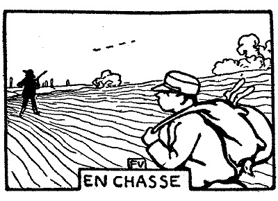
ルピック氏は、
 気
気ルピック氏が、猟の
「こいつは、そのへんの百姓家へ預けるか、さもなけりゃ、
こういう。にんじんは、
「ううん、僕、持ってるほうがいいんだよ」
そこで、一日じゅう、二匹の兎と、五羽の
が、彼は
「ここで待ってろ。わしは、その畑をひと
時として、ルピック氏はこういう。
にんじんは
「そんなとこに、なにがいるもんか」と、にんじんは心の中でいう――「そうそう、ひっぱたけ！
で、彼は、ひそかにルピック氏を
すると、ルピック氏は、またひとつの柵を飛び越えた。
にんじんは、そこで
「待ってろっていったけど、こうなると、くっついて行かなきゃなるまい。初めの調子の悪い日は、
そういえば、にんじんは、他愛のない迷信家である。
（彼が帽子の
（彼は帽子を
にんじんの告白によれば、この方法も百発百中というわけにはいかぬ。あまりしばしば繰り返してやると、
「どうだい、撃つとこを見たかい？」と、ルピック氏は、まだ
「だって、父さんがこいつを仕止めたのは、僕のお蔭なんだもの」
にんじんは答える。
また今度も成功だというので、彼は得意なのだ。そこで、例の方法を、ぬけぬけと説明したものである。
「お前、そりゃ、本気か？」
と、ルピック氏はいった。
にんじん――いいや、そりゃ、僕だって、決して間違いはないとはいわないさ。
ルピック氏――もういいから、黙 っとれ、阿呆 ！ わしから注意しといてやるが、もし、頭のいい児 っていう評判を失 くしたくなけりゃ、そんなでたらめはよその人の前でいわんこった。こっぴどく嗤 われるぞ。それとも、万が一、わしをからかおうとでもいうのか？
にんじん――ううん、そんなことないよ、父さん。だけど、そういわれてみると、ほんとだね。ごめんよ。僕あ、やっぱりお人好 しなんだ。
［＃改ページ］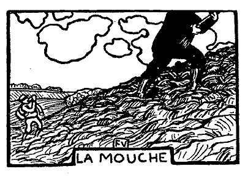
猟はまだ続くのである。にんじんは、自分が
「ひと口どう、
風は「いらん」という音しか運んでこない。にんじんは、今
「あのね、父さん、僕の耳ん中へ、
ルピック氏――除 ったらいいだろう。
にんじん――奥の方へ行っちゃったんだよ。届かないんだもの。ブーンっていってんのが聞こえるよ。
ルピック氏――放 っとけ。ひとりでに死ぬよ。
にんじん――でも、もしかして、卵を生 んだら？ 巣をこさえたら？ え、父さん？
ルピック氏――ハンケチの角 で潰 してみろ。
にんじん――焼酎をすこし流し込んで、溺 れさしちまったらどう？ そうしてもいい？
「なんでも流し込め！」と、ルピック氏はどなる――「だが、早くしろ」にんじんは罎の口を耳にあてがい、もう一度そいつをからっぽにする。ルピック氏が、わしにも飲ませろといい出した時の用心にである。
で、やがて、にんじんは、駈け出しながら、うきうきと叫ぶ――
「そらね、父さん、僕、もう蠅の音が聞こえなくなったよ。きっと死んだんだろう。ただ、やつめ、これみんな飲んじまやがった」
［＃改ページ］
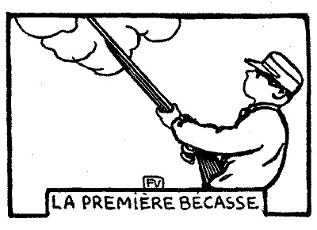
「そこにいろ、一番いい場所だ。わしは犬を
ルピック氏は、こういった。
にんじんは、両腕で鉄砲を横倒しに抱いた。鴫を
鶉は、地べたの上で、犬が立ち止まっているその鼻先で、
「
ルピック氏は彼にそういった。
が、にんじんは、本能的に、もう一歩前へ踏み出し、銃を肩につけ、
それはそうと、若い狩猟家の名声が決まるのは、鴫を一羽撃ち止めるということだ。今日という日こそ、にんじんの生涯を通じて、記念すべき日でなければならぬ。
すると、やがて、二羽の鴫が、舞い上がった。例の長い嘴で、そのために、飛びかたが重い。それでも、情愛こまやかに、追いつ追われつ、
ルピック氏が、あらかじめいったように、彼らは、ピッピッピイと啼いてはいるが、あんまりかすかなので、こっちへやって来るかどうか、にんじんは心配になりだした。彼は、しきりに眼を動かしている。見ると、頭の上を、二つの影が通り過ぎようとしている。
二羽のうち一羽が、嘴を下にして落ちてくる。反響が林の
にんじんは、羽根の折れたその鴫を拾い、
ピラムがルピック氏より先に駈けつけてくる。ルピック氏は、
「
にんじんは、
が、ルピック氏は、枝をかき分け、姿を現わす。そして、まだ煙を立てている息子に向かい、落ちつき払った声でいう――
「どうして二羽ともやっつけなかったんだ」
［＃改ページ］
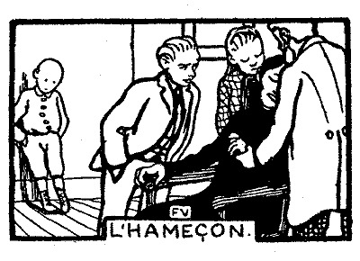
にんじんは、釣ってきた魚の
ルピック夫人が、ちょっと
「よしよし、こりゃいい。今日は、
そういって、彼女は、
指の先へ
姉のエルネスチイヌが駈けつける。兄貴のフェリックスもこれに続く。それから間もなく、ルピック氏自身やってくる。
「どら、見せてごらん」
と、彼らはいう。
ところが、彼女は、その指をスカートで包み、
ルピック氏は、それを抜こうとしてみる。
「いや、いや、そんなふうにしちゃ……」
ルピック夫人は、
ルピック氏は、
「弱ったなあ。針を折らなけりゃ」
どうして、それを折るかだ。ご亭主も、こうなると手のくだしようがなく、ちょっと力を入れただけで、ルピック夫人は、飛び上がり、泣き
「じゃ、肉を切らなけりゃ……」
ルピック氏はいう。
彼は眼鏡をかけなおす。ナイフを出す。そして、指の上を、よくも
「あいた、た、あいっ」
ルピック夫人は叫ぶ。一同は
「もっと、早く、
と、姉のエルネスチイヌがいう。
「そんなふうに、ぐったりしてちゃだめだよ」
兄貴のフェリックスが母親にいう。
ルピック氏は、
ルピック氏は、それを利用する。顔は
やれやれ！
その間、にんじんは、なんの手助けもしない。母親の最初の悲鳴といっしょに、彼は逃げ出した。
「どうも食わなかったと思ったら、じゃ、別に
彼は、そこで、母親の痛がる声を聴いている。第一、それが聞こえても、別に悲しい気持にもならない。もう少したって、今度は自分が、彼女よりも大きな声で、できるだけ大きな声で、
近所の人たちが、何事かと思い、彼に
「どうしたんだい、にんじん？」
彼は答えない。耳を
そうこうするうちに、ルピック夫人が乗り出してくる。彼女は、
「母さんをあんな痛い目に
ルピック夫人は前へこごむ。彼は、
彼は、もう、何がなんだかわからない。泣けるだけ泣く。
「もういいんだっていうのにさ。
にんじんの
「馬鹿だよ、この子は。首でも締められてるみたいにさ」
母親の慈愛に、しんみりさせられた近所の人たちに向かい、彼女はそういうのである。
彼女は、一同の手に釣針を渡す。彼らは、もの珍しげに、それを
「ほんとに、あん時ばかりは、どんなはずみで、この子を殺しちまったかも知れません。
姉のエルネスチイヌは、そいつを遠くのほうへ、庭の
「おい、
そこで、彼は、にんじんをゆすぶる。こっちは、罰を免れたので、相変わらずきょとんとしている。それでも、自ら責めているふうをまだ誇張して見せ、かすれたしゃくり泣きを喉から押し戻し、ひっぱたき
［＃改ページ］
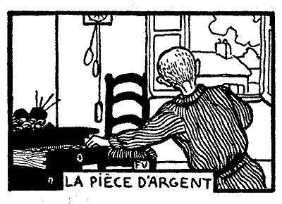
ルピック夫人――お前、なんにも失 くしたもんはないかい、にんじん？
にんじん――ないよ。
ルピック夫人――すぐに「ない」なんて、どうしていうのさ、知りもしないくせに。まずカクシをひっくり返してごらん。
にんじん――（カクシの裏を引き出し、驢馬 の耳みたいに垂 れた袋を見つめている）――ああ、そうか。返してよ、母 さん。
ルピック夫人――返すって、何をさ？ 失くなったもんがあるのかい。母さんは、いいかげんに訊 いてみたんだ。そうしたら、やっぱりそうだ。何を失くしたのさ。
にんじん――知らない。
ルピック夫人――そらそら！ 嘘を吐 こうと思って、もう、うろうろしてるじゃないか、あわ喰 った鮒 みたいに……。ゆっくり返事をおし。何を失くした？ こまかい？
にんじん――そうそう、うっかりしてた。こまだった。そうだよ、母さん。
ルピック夫人――そうじゃないよ、母さん。こまなもんか。こまは先週、あたしが取り上げたんだ。
にんじん――そいじゃ、小刀 だ。
ルピック夫人――どの小刀？ 誰だい、小刀をくれたのは？
にんじん――だれでもない。
ルピック夫人――情 けない子だよ、お前は……。こんなこといってたら、きりがありゃしない。まるで、母さんの前じゃ口がきけないみたいじゃないか。だけどね、今は二人っきりだ。母さんは優しく訊いてるんだよ。母親を愛してる息子 は、なんでも母親にほんとのことをいわなけりゃ。どうだろう、母さんは、お前が、お金を失くしたんだと思うがね。銀貨さ。母さんはなんにも知らないよ。でも、ちゃんと見当がつくんだ。そうじゃないとはいわせないよ。そら、鼻が動いている。
にんじん――母さん、そのお金は僕んでした。おじさんが、日曜にくれたんです。そいつを失くしちゃったんだ。僕が損しただけさ。惜 しいけど、僕、あきらめるよ。それに、そんなもん、大して欲 しかないんだもの。銀貨の一つやそこら、あったって無 くったって！
ルピック夫人――それだ。減 らず口は好 いかげんにおし。それをまた、あたしが聴いてるからだ、お人好 しみたいに。じゃ、なにかい、おじさんの志を無にしようっていうんだね。そんなにお前を甘やかしてくれるのに……。どんなに怒ることか。
にんじん――だって、もしか僕が、そのお金を好きなことに使ったとしたらどうなの？ それでも、一生そのお金の見張りをしてなけりゃいけないかしら？
ルピック夫人――うるさいっ！ 偉そうに！ このお金はね、失くしてもいけないし、ことわらない前に使ってもいけません。こりゃもうお前に渡さないよ。代りがあるなら持っといで。捜 しといで。造 れるなら造ってごらん。まあ、そこはいいようにするさ。あっちへおいで。つべこべいわずに！
にんじん――はあ。
ルピック夫人――その「はあ」は、これからやめてもらおうかね。一風 変わったつもりか知らないけど……。それから、すぐに鼻唄 を歌ったり、歯と歯の間で口笛を吹いたり、気楽な馬方 の真似 をしたら、今度は承知しないよ。母さんにゃ、そんなことしたって、なんにもなりゃしないんだ。
にんじんは、
一体全体、例の銀貨はどこに落ちてるんだろう？ はるか上の、木の枝か、その辺の古巣の奥か？
時として、何も捜していない、何も考えていない人たちが、金貨を拾うということもある。現にあったことなのだ。しかし、にんじんは、地べたを這い廻り、
さまよい疲れ、当てのない望みに疲れ、にんじんは、とてもだめだと
ルピック夫人は、影も姿も見えない。彼は、おそるおそる呼んでみる――
「母さん……ねえ……母さん……」
返事がない。彼女はたった今出かけたばかりだ。そして、仕事机の
それらの銀貨は、そこで、
つまり三つかと思えば四つ、そうかと思えばまた八つなのだ。数えようにも数えようがない。抽斗をさかさまにし、毛糸の
とっさの思いつき、これが、こと重大な場合でないと彼を見放さないのである。このとっさの思いつきで、彼は今、意を決し、腕を差し伸べ、銀貨を一つ盗んだ。そして逃げ出した。
見つかったらという心配で、彼は、ためらうことも、後悔することも、またもう一度仕事机のほうへ引っ返すこともできないのである。
彼はまっすぐに飛び出した。あんまり先へのめって、止まることすらむずかしい。
「もう少し、お
こう叫ぶあの無邪気な遊びそのままだ。
にんじん――母さん、母さん、あれ、あったよ。
ルピック夫人――母さんだって、あるよ。
にんじん――だって……。そらね。
ルピック夫人――母さんだって、こら……。
にんじん――どら、見せてごらん。
ルピック夫人――お前、見せてごらん。
にんじん――（彼は銀貨を見せる。ルピック夫人は、自分のを見せる。にんじんは二つを手に取り、較 べてみ、いうべき文句を考える）――おかしいなあ。どこで拾ったの、母さんは？ 僕は、この小径の梨 の木の下で拾ったんだ。見つける前に二十度もその上を歩いてるのさ。光ってるんだろう。僕、はじめ、紙ぎれか、それとも、白い菫 だろうと思ってたんだもの。だから、手を出す気にならなかったの。きっと僕のポケットから落っこったんだろう、いつか草ん中を転 がり廻った時……気違いの真似をして……。しゃがんでみてごらん、母さん、この野郎 がうまく隠れたとこをさ、隠 れ家 をさ。人に苦労させやがって、こいつ得意だろう。
ルピック夫人――そうじゃないとはいわない。母さんは、お前の上着の中にあったのをみつけたんだ。あんなにいってあるのに、お前はまた、着物を着替える時にカクシのものを出しとくのを忘れてる。母さんは、ものを几帳面 にすることを教えようと思ったんだ。自分で懲 りるように自分で捜しなさいといったんだ。ところが、捜せばきっと見つかるっていうことが、やっぱりほんとだった。そうだろう、お前の銀貨は、一つが二つになった。えらい金満家 だ。終りよければ総 てよしだがね、いっといてあげるが、お金はしあわせの元手 じゃないよ。
にんじん――じゃ、僕、遊びに行っていい、母さん？
ルピック夫人――いいとも、遊んでらっしゃい。子供くさい遊びはもう決してするんじゃないよ。さ、二つとも持ってお行き。
にんじん――ううん、僕、一つでたくさんだよ。母さん、それしまっといて、またいる時まで……ね、そうしてね。
ルピック夫人――いやいや、勘定 は勘定だ。お前のものはお前が持っていなさい。両方とも、これはお前のもんだ。おじさんのと、梨の木のと……。梨の木のほうは、持主が出れば、こりゃ別だ。誰だろう？ いくら考えてもわからない。お前、心当りはないかい？
にんじん――さあ、ないなあ。それに、どうだっていいや、そんなこと……。明日 考えるよ。じゃ、行ってくるよ、母さん、ありがとう。
ルピック夫人――お待ち。園丁 のだったら？
にんじん――今すぐ、訊 いて来てみようか？
ルピック夫人――ちょっと、ぼうや、助けておくれ。考えてみておくれ。父 さんは、あの年で、そんなうっかりしたことをなさるはずはないね。姉 さんは、貯金はみんな貯金箱に入れておくんだからね。兄 さんはお金を失くす暇なんかない。握るといっしょに消えちまうんだから……。そうしてみると、どうもこりゃ、あたしだよ。
にんじん――母さんだって？ そいつあ、変だなあ。母さんは、あんなにきちんと、なんでもしまっとくくせに……。
ルピック夫人――大人 だって、どうかすると、子供みたいな間違いをするもんだよ。なに、検 べてみればすぐわかる。とにかく、こりゃ、あたしの問題だ。もう話はわかった。心配しないでいいよ。遊んどいで。あんまり遠くへ行かずに……。その暇に母さんは、仕事机の抽斗 の中をちょっとのぞいて来るから……。
にんじんは、もう走り出していたが、振り向いて、
ルピック夫人（右手を振り上げ、崩 れかかる）――お前の嘘吐 きなことは百も承知だ。しかし、これほどまでとは思ってなかった。嘘の上へまた嘘だ。どこまででも行くさ。初めに卵一つ盗めば、その次ぎは牛一匹だ。そして、しまいに、母親を締め殺すんだ。
最初の一撃が襲いかかる。
［＃改ページ］
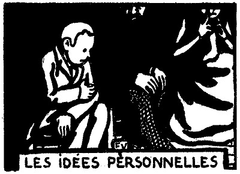
ルピック氏、兄貴のフェリックス、姉のエルネスチイヌ、それと、にんじん、この四人は、根のついた
「僕としちゃあ、家族っていう名義は、およそ意味のないもんだと思うんだ。だからさ、
「ふむ」
と、ルピック氏は
「おれはどうだい？」
「あたしは？」
と、兄貴のフェリックスに、姉のエルネスチイヌである。
「おんなじことさ」と、にんじんはいう――「偶然が、ただ君たちを、僕の兄、僕の姉と決めただけだ。それを僕が君たちに感謝するわけはないだろう。僕たち三人が同時にルピックの姓を名乗ってるからって、それは誰の罪だ？ 君たちは、それを
「はなはだ行き届きません」
と、兄貴のフェリックスはいう。
「どこから考えついたの、そんな夢みたいなこと？」
姉のエルネスチイヌはいう。
「それに、僕のいってることは……」と、にんじんは附け加える――「一般的には、たしかにそういえるんだ。個人的の問題は
「二度はいえないだろう」
と、兄貴のフェリックスがいう。
「僕の話の、どういうところが悪いの？」と、にんじんは答える――「僕の考えを変に取らないでおくれよ。僕に愛情が欠けていると思ったら間違いだ。僕あ、これで、見かけよりゃ、兄さんを愛しているんだぜ。しかし、この愛情たるや、
「おいおい、その癖はいつやめるんだい、自分で意味のわからんような言葉をやたらつかう癖は……？」
ルピック氏は、そういって
「ことに、そいつを、お前の年で、ほかのものに言って聞かせるなんて……。もし
「暇つぶしに話してるんだからいいじゃないの」
と、にんじんは、そろそろ不安である。
「黙ってるほうがなおいい」
ルピック氏は、
父親の姿は消える。兄貴のフェリックスが、その
「じゃ、失敬、昔のお
と、彼はにんじんにいう。
それから、姉のエルネスチイヌが座を起つ。そして、
「おやすみなさい」
と、いった。
にんじんは、ひとり取り残されて、途方に暮れる。
昨日、ルピック氏は、物の考え方について、もっと修行をしろと、彼に注意したのである――
「我々って、いったいなんだ？ 我々なんて、ありゃせん。
最初に試みたその意見が、さんざんなあしらいを受けたので、にんじんは、
しかし、今夜は、にんじんは
それから、寝床へはいり、
［＃改ページ］
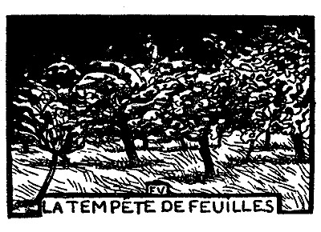
もうよほど前から、にんじんは、ぼんやり、大きなポプラの、一番てっぺんを見つめている。
彼は、
その葉は、
毎日、その葉は、太陽の初めと終りの光線を
正午からこっち、死んだように動かない。葉というよりも点だ。にんじんは我慢がしきれなくなる。落ちついていられない。すると、ようやく、その葉が合図をする。
その下の、すぐ
そして、これが、危急を告げる合図なのである。なぜなら、地平線の上には、褐色の
ポプラは、もう、
彼の不安は、
最初、彼らは、細い枝を震わせて、鳥どものおしゃべりを
その次は、彼らは、敵を
鉛色の球帽は、徐々に侵略を続けている。
しだいに天を
いよいよすぐそこへ来た。ほかから
下のほうでは、ずんぐりむっくり、
その下では、スグリの木が赤い
さらに下のほうでは、
どうしてだ？ 何事だ、これは？ そして、一体、どんなわけがあるのだ？ 雷が鳴るのでもない。
今や、
動いている。にんじんはちゃんと知っている。すべって行く。正体はばらばらの浮雲だ。さあ、もうおしまいだ。お
彼は彼で、両方の耳へ指をつっこむ。ところが、嵐は、叫びと
そして、街で
やがて、にんじんは、これが自分の心臓かと思う。わずかに、
［＃改ページ］
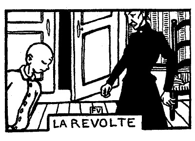
ルピック夫人――にんじんや、あのね、いい子だから水車へ行って、バタを一斤もらって来ておくれな。大急ぎだよ。お前が帰るまでに食事をはじめずに待っててあげるからね。
にんじん――いやだよ。
ルピック夫人――「いや」っていう返事はどういうの？ さ、待っててあげるから……。
にんじん――いやだよ。僕は、水車へなんか行かないよ。
ルピック夫人――なんだって？ 水車へなんか行かない？ なにをいうの、お前は？ 誰なのさ、用を頼んでるのは？ ……なんの夢を見てるんだい？
にんじん――いやだよ。
ルピック夫人――これこれ、にんじん、どうしたというのさ、一体？ 水車へ行って、バタを一斤もらっておいでって、母 さんのいいつけだよ。
にんじん――聞こえたよ。僕は行かないよ。
ルピック夫人――母さんが、夢でも見てるのかしら……？ 何事だろう、こりゃ……？ お前は、生れて初 めて、母さんのいうことを聴 かないつもりだね？
にんじん――そうだよ。
ルピック夫人――母さんのいうことを聴かないつもりなんだね？
にんじん――母さんのね、そうだよ。
ルピック夫人――そいつは面白 い。どら、ほんとかどうか、……走って行って来るかい？
にんじん――いやだよ。
ルピック夫人――お黙 り！ そうして行っといで！
にんじん――黙るよ。そうして行かないよ。
ルピック夫人――さ、このお皿を持って駈け出しなさい！
にんじんは黙る。そして、動かない。
「さあ、革命だ」
と、ルピック夫人は、踏段の上で、両腕を
なるほど、にんじんが彼女に向かって「いやだ」といったのは、これが初めてだ。これがもし、何かの邪魔でもされたとか、また、遊んでいる最中ででもあったのならまだしもだ。ところが、今、彼は、地べたに坐り、鼻を風に
「エルネスチイヌ、フェリックス、
そこで、通りをたまに通る人々でも、立ち止まって見られるわけだ。
にんじんは中庭の真中に、
「みんな、いいかね、あたしゃ、
めいめい、察しがついた。彼の
優しいエルネスチイヌは、
「気をつけなさい。ひどい目に
兄貴のフェリックスは、見物席に
「世の中がひっくり返った。世の終りだ。さあ、あたしゃ、もう知らない」と、へこたれて、ルピック夫人はいった――「あたしゃ、引き上げるよ。誰か口を
「父さん」と、にんじんは、こみあげてくる感情の
ルピック氏は、この
そこで彼は、ぎごちなく、草の中を二、三歩あるいて、肩をぴくんとあげ、くるりと背を向けて、
当分、事件は、そのままというわけだ。
［＃改ページ］
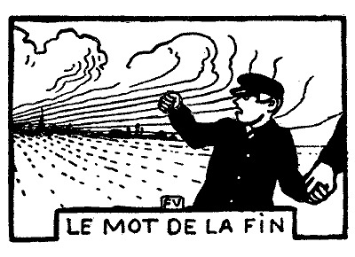
夕方、食事がすむ。ルピック夫人は、病気で寝ているので、いっこう姿を見せない。みんな黙りこくっている。習慣からでもあり、また、遠慮からでもある。ルピック氏は、ナフキンを結び、そいつを食卓の上へ投げ出し、そしていう――
「旧道の羊飼い場まで散歩に行くが、一緒に来ないか、誰も？」
にんじんは、ルピック氏がこういう方法で彼を誘い出すのだと気がつく。彼は同じく
ルピック氏――何を待ってるんだ？ 今日、お前がやったことは、どういうんだ、ありゃ？ わけをいってみろ。母 さんはあんなに口惜 しがってるじゃないか。
にんじん――父 さん、僕、今まで永 い間、いいだせずにいたんだけど、いいかげんに形 をつけちゃおう。僕、ほんとをいうと、もう、母さんが嫌いになったよ。
ルピック氏――ふむ。どういうところが？ いつから？
にんじん――どういうところって、どこもかしこも……。母さんの顔を覚えてからだよ。
ルピック氏――ふむ。そいつは嘆 かわしいこった。せめて、母さんがお前にどんなことをしたか、話してごらん。
にんじん――長くなるよ、そいつは。それに、父さん、気がつかない、なんにも？
ルピック氏――つかんこともない。お前がよく膨 れっ面 をしてるのを見たよ。
にんじん――僕、膨れるっていわれると、なお癪 に障 るんだ。そりゃむろん、にんじんは、真剣に人を恨 むなんてこと、できないんだよ。奴 さん、膨れっ面をするだろう。ほっとけばいいのさ。するだけしたら、落ちつくんだ。機嫌 を直して、隅 っこから出て来るよ。ことに、奴さんにかまってる風 をしちゃいけない。どうせ、大したことじゃないんだから。ごめんよ、父さん。大したことじゃないっていうのは、父さんや母さんや、それから、ほかのものにとってはさ。僕あ、ときどき膨れっ面をするよ。そりゃそれに違いないけど、ただ形の上さ。しかし、どうかすると、まったくの話、心の底から、何をっていう風 に、腹を立てることもあるの。で、その侮辱 は、もう、どうしたって忘れやしないさ。
ルピック氏――まあ、まあ、そういわずに、忘れちまえ。からかわれて怒る奴 があるか。
にんじん――ううん、ううん、そうじゃないよ。父さんはすっかり知らないからさ。家 にいることは、そうないんだもの。
ルピック氏――出歩 かにゃならんのだ。しょうがない。
にんじん（我が意を得たりという風に）――仕事は仕事だよ、父さん。父さんは、いろんなことに頭を使ってるから、それで気が紛 れるんだけど、母さんときたら、今だからいうけど、僕をひっぱたくよりほかに、憂 さばらしのしようがないんだよ。それが、父さんの責任だとはいわないぜ。なに、僕がそっといいつけりゃよかったのさ。父さんは、僕の身方 になってくれたんだ。これから、ぼつぼつ、もう以前からのことを話してみるよ。僕のいうことが大袈裟 かどうか、僕の記憶がどんなもんだか、みんなわかるさ。だけどね、父さん、さっそく、相談したいことがあるの。僕、母さんと別れちゃいたいんだけど……。どう、父さんの考えで、一番簡単な方法は？
ルピック氏――一年にふた月、休暇に会うだけじゃないか？
にんじん――その休暇中も、寮に残っちゃいけない？ そうすりゃ、勉強のほうも進むだろう？
ルピック氏――そういう特典があるのは、貧乏な生徒だけだ。そんなことでもしてみろ。世間じゃ、わしがお前を捨てたんだっていわあ。それに第一、自分のことばかり考えちゃいかんよ。わしにしてみてからが、お前と一緒におられんようになるじゃないか。
にんじん――面会に来てくれればいいんだよ、父さん。
ルピック氏――慰 みの旅行は、高くつかあ、にんじん。
にんじん――是非 っていう旅行を利用したら……？ ちょっと廻り路 をしてさ。
ルピック氏――いや、わしは、今まで、お前を兄貴や姉さんとおんなじに取り扱ってきた。誰を特別にどうするっていうことは、決してしなかった。そいつは変えるわけにいかん。
にんじん――じゃ、学校のほうを止 そう。寮を出しておくれよ。お金がかかりすぎるとでもいってさ。そうすりゃ、僕、何か職業を選ぶよ。
ルピック氏――どんな？ 早い話が、靴屋へでも丁稚奉公 にやって欲 しいっていうのか？
にんじん――そうでもいいし、どこだっていいよ。僕、自分の食べるだけ稼 ぐんだ、そうすりゃ、自由だもの。
ルピック氏――もう遅い、にんじん。靴の底へ釘を打つために、わしはお前の教育に大きな犠牲を払ったんじゃない。
にんじん――そんなら、もし僕が、自殺しようとしたことがあるっていったら、どうなの？
ルピック氏――おどかすな、やい。
にんじん――嘘 じゃないよ。父さん、昨日 だって、また、僕あ、首を吊 ろうと思ったんだぜ。
ルピック氏――ところで、お前はそこにいるじゃないか。だから、まあまあ、そんなことはしたくなかったんだ。しかも、お前は、自殺をしそこなったという話をしながら、得意そうに、頤 を突き出している。今までに、死にたいと思ったのは、お前だけのように考えているんだ。やい、にんじん、我身勝手 の末は恐ろしいぞ。お前はそっちへ布団 をみんなひっぱって行くんだ。世の中は自分一人のもんだと思ってる。
にんじん――父さん、だけど、僕の兄貴は幸福だぜ。姉さんも幸福だぜ。それからもし母さんが、父さんのいうように、僕をからかって、それがちっとも楽しみじゃないっていうんなら、僕あ、なにがなんだかわからないよ。その次ぎは、父さんさ。父さんは威張 ってる。みんな怖 がっているよ。母さんだって怖がってるさ。母さんは、父さんの幸福に対して、どうすることもできないんだ。これはつまり、人類の中に、幸福なものもいるっていう証拠じゃないか。
ルピック氏――融通 のきかないちっぽけな人類だよ、お前は。その理窟は、屁 みたいだ、そりゃ。人の心が、いちいち奥底まで、お前にはっきり見えるかい？
ありとあらゆることが、もう、ちゃんとわかるのか、お前に……？
にんじん――僕だけのことならだよ、ああ、わかるよ、父さん。少なくとも、わかろうと努めてるよ。
ルピック氏――そんならだ。いいか、にんじん、幸福なんていうもんは思い切れ！ ちゃんといっといてやる。お前は、今より幸福になることなんぞ、決してありゃせん。決して、決して、ありゃせんぞ。
にんじん――いやに請合 うんだなあ。
ルピック氏――あきらめろ。鎧兜 で身を固めろ。それも、年なら二十になるまでだ。自分で自分のことができるようになれば、お前は自由になるんだ。性質や気分は変わらんでも、家は変えられる。われわれ親同胞 と縁を切ることもできるんだ。それまでは、上から下を見おろす気でいろ。神経を殺せ。そして、他の者を観察しろ。お前の一番近くにいる者たちも同様にだ。こいつは面白いぞ。わしは保証しとく、お前の気安 めになるような、意外千万 なことが目につくから。
にんじん――そりゃそうさ。他の者は他の者で苦労はあるだろうさ。でも、僕あ、明日 、そういう人間に同情してやるよ。今日は、僕自身のために正義を叫ぶんだ。どんな運命でも、僕のよりゃましだよ。僕には、一人の母親がある。この母親が僕を愛してくれないんだ。そして、僕がまたその母親を愛していないんじゃないか。
「そんなら、わしが、そいつを愛してると思うのか」
我慢ができず、ルピック氏は、ぶつけるようにいった。
これを聞いて、にんじんは、父親のほうに眼をあげる。彼は、しばらく、そのむつかしい顔を見つめる。
やがて、彼は、
「やい、
「こら、
と、ルピック氏はいう。
「ああ」と、にんじんは、再び、単純でしかも用心深い子供になり――「僕の母さんだと思ってこういうんじゃないんだよ」
［＃改ページ］
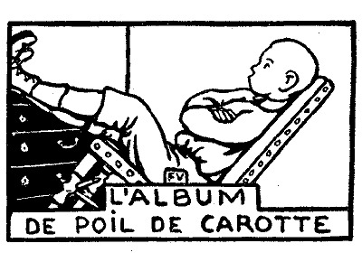
たまたまどこかの人が、ルピック一家の写真帖をめくってみると、きまって意外な顔をする。姉のエルネスチイヌと兄貴のフェリックスは、立ったり、腰かけたり、
「で、にんじんは？」
「これのはね、ごく小さな時のがあったんですけれど……」と、ルピック夫人は答えるのである――「そりゃ
ほんとのところは、
彼はにんじんで通っているが、その通り方は、ひと通りではない。
「どうしてにんじんなんてお呼びになるんです？ 髪の毛が黄色いからですか」
「
と、ルピック夫人はいう。
その他の特徴を
にんじんの
にんじんの鼻は、
にんじんは、いくら
にんじんは、舌の上へ雪をのせ、乳を吸うようにそれを吸って、
にんじんは
にんじんの
要するに、にんじんの好みは
彼は一番に起きる。女中と同時だ。で、冬の朝など、日が出る前に寝台から飛び
コーヒーとココアの用意ができる。すると、彼は、何のひと
誰かに彼を紹介すると、彼は顔をそむけ、手を
そこで、人が彼に、
「キスしてくれないのかい、にんじん」
と、頼みでもすると、彼は答える――
「なに、それにゃ及ばないよ」
ルピック夫人――にんじん、返事をおし、人が話しかけた時には……。
にんじん――アギア、ゴコン。
ルピック夫人――ほらね、そういってあるだろう、子供はなんか頬 ばったまま、ものを言うんじゃないって……。
彼は、どうしても、ポケットへ手をつっこまずにはいられない。ルピック夫人がそばへ来ると、急いで引き出すのだが、いくら早くやったつもりでも、遅すぎるのである。彼女はとうとうポケットを
「たとえ、どんな目に
「そうさ」と、にんじんは答える――「ただ、時間がもうからあ」
怠け者の兄貴、フェリックスは、
彼は、のうのうとし、ほっとする。
「お前の趣味は、一体なんだ」と、ルピック氏は
「えっ！ まだやるのかい？」
と、彼はいう。
みんなで罪のない
ベルト嬢が、いろんなことを
にんじんが答える――
「そりゃ、ベルトさんの眼は空色だから……」
みんなが叫んだ――
「すてき！ 優しい詩人だわ」
「ううん、僕あ、眼なんか見ないでいったんだよ」と、にんじんはいう――「なんていうことなしにいってみたまでさ。今のは、
彼は、頭を
氷が張って、ほかのものが
そして、隠れんぼでは、あんまり
子供たちは
ひと目見ただけで、兄貴のフェリックスが文句なしに首から上ほかのものより大きい。しかし、にんじんと姉のエルネスチイヌとは、
にんじんは、女中のアガアトに、次のように忠告をする――
「奥さんとうまく調子を合わせようと思うなら、僕の悪口をいってやりたまえ」
これにも限度がある。
というのは、ルピック夫人は、自分以外の女が、にんじんに手を触れようものなら、承知しないのである。
近所の女が、たまたま、彼を
「さあ、今度は、
と、彼女はいう。
「
にんじんは小さなピエエルに
おおよそ
「僕あ、そんなことより、一度でいいから、
彼は考える――
「もし母さんが、僕を
時々は、姉のエルネスチイヌも兄貴のフェリックスも、遊び
で、彼は、決して、あまり
にんじん――じゃ、僕の耳、そんなに長すぎるなんて思わない？
マチルド――変な恰好 だと思うわ。どら、貸してごらんなさい。こんなかへ泥を入れて、お菓子を作りたくなるわ。
にんじん――母 さんがこいつをひっぱって、熱 くしときさえすりゃ、ちゃんとお菓子が焼けるよ。
「文句をいうのはおよし！ いつまでもうるさいね。じゃ、お前は、あたしより
と、ルピック夫人は、折にふれ、いうのである。
「僕は現在のままさ。なんにもいわないよ。ただ、どっちがどっちより好きだなんてことは、絶対にない」
と、にんじんの心の声が
ルピック夫人――なにしてるんだい、にんじん？
にんじん――なにって、知らないよ。
ルピック夫人――そういうのは、つまり、また、ろくでもないことをしてるってこった。お前は、一体、いつでも、知っててするのかい、そんなことを？
にんじん――こうしてないと、なんだか淋 しいんだもの。
母親が自分のほうを向いて笑っていると思い、にんじんは、うれしくなり、こっちからも笑ってみせる。
が、ルピック夫人は、漠然と、自分自身に笑いかけていたのだ。それで、急に、彼女の顔は、黒すぐりの眼を並べた暗い林になる。
にんじんは、どぎまぎして、隠れる場所さえわからずにいる。
「にんじん、笑う時には、
と、ルピック夫人はいう。
「泣くなら泣くで、どうしてだか、それがいえないって法はない」
と、彼女はいう。
彼女は、また、こうもいう――
「あたしの身にもなってくださいよ。あの子ときたら、ひっぱたいたって、もうきゅうとも泣きゃしませんよ」
なお、彼女はこういうのである――
――空に
――あの子は、頭の中で何か考えてると、お尻のほうは、お
――高慢なことといったら、人が
事実、にんじんは、水をいれたバケツで自殺を
時として、ルピック夫人は、にんじんのことを、こういうふうにいう――
「ありゃ、あたしそっくりでね、毒はないんですよ。意地が悪いっていうよりゃ、気が
時として、彼女は、あっさり承認する――
もし彼に、けちな虫さえつかなければ、やがては、
「もし、いつか、兄貴のフェリックスみたいに、誰かがお年玉に木馬をくれたら、おれは、それへ飛び乗って、さっさと逃げちまう」
これが、にんじんの空想である。
彼にとっていっさいが
それはそうと、
彼は、父親と母親の間で、橋渡しを
ルピック氏はいう――
「にんじん、このシャツ、ボタンが一つとれてる」
にんじんは、そのシャツをルピック夫人のところへ持って行く。すると、彼女はいう――
「お前から、
しかし、彼女は、針箱を引き寄せ、ボタンを縫いつける。
「これで、
と、ルピック夫人は叫ぶ。
「
ルピック夫人は、ひっきりなしにいう。
にんじんは、
なるほど、彼が
「こりゃ、どっちかっていえば、悪いことじゃなくって、
ルピック氏が、
「もう、うるさいったら、
にわかに、
彼は口の中でぶつぶついう。
が、ルピック氏は、いつまでも、いつまでも、彼を見据えている。しかも、危ない
姉のエルネスチイヌは、間もなくお
「先へ行きなさいよ。駈け出したっていいわ」
彼女は、こういう。
にんじんは先へ歩く。一所懸命に駈け出しては見る。犬がよくやるあの走りかただ。が、うっかり、速度を
彼は
神経が
「おれなんか、絶対に、誰も愛してくれやしない！」
それと同時に、ルピック夫人が、しかもあのすばやい耳で、唇のへんに微笑を浮かべながら、塀の
すると、にんじんは、
「そりゃ、母さんは別さ」